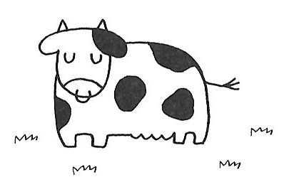

| 『甚五』少年の日より (22世紀アート) | |
| 本松 秀茂 | |
| 22nd CENTURY ART (2018) | |
表紙絵のピエロは女流歌人、田村絹子氏の作品です。北九州文学協会の会員で、季節ごとにこのような挿し絵のついたお便りを寄せてくれます。
私はこのピエロを見るとき、人間の一面、いや、人間の本質を垣間見るように思います。
つまり本人は精一杯おしゃれして、カッコ良く有能な人間であるかのように振る舞っているつもりでありましょうが、傍目 には拙 くダサい上に不器用です。そのため人々の嘲笑を浴びています。
でもそんなことには少しも臆することなく、一つのことに一所懸命に取り組んでいる姿には感銘を受けます。
けれどもピエロの本質は、客観的な視野と高い見識に加え、並外れた能力を有しながらも、傲らず、威張らず、見る人に、ダサくてもいい、不格好でもいい、己が信じる道を忠実に生きなさいと教えているように思うのです。私にはピエロがカッコ良く、崇高にすら見えます。
ピエロ私の師であり憧れです。願わくば私もピエロのような人間になりたいと思います。
ぼくのホントの名前は峰甚五 といいます。でもぼくは小学校のころ、【ノロ甚 、ノロ甚 】と呼ばれておりました。それはぼくがノロマだったからです。体操の授業で「集合」と号令がかかっても集まるのが遅く、イライラした先生がみんなの前で「このノロ甚が！」と怒鳴ったのが始まりです。先生がそう言ったものですから、みんなもぼくのことをノロ甚と呼ぶようになりました。ぼくは嫌でしたが、先生はじめみんながそう呼ぶものだからそうなってしまいました。
でもぼくには【峰甚五】というぼく自身とても気に入った名前があるのです。
学校に上がる前、ぼくはひどい腎臓病を罹った。身体 全体がプクプクに腫れ、喉が詰まって呼吸もできないほどだった。後でお母さんに聞いて知ったのだが、一時、もう駄目かもしれないと思っていたそうだ。
ぼくの記憶では、人力車に乗ったお医者さんが、木戸のところを曲がるのを見つけると、急いで床下に隠れていた。注射をされるのが怖かったからだ。これはかなり病状が良くなってからの記憶だと思う。
それよりぼくを苦しめたのは小児喘息を併発していたことだ。一度発作が起きると、激しく咳き込み、喉から心臓が飛び出してしまうくらい苦しくて死にそうだった。殊に冬になるとこの発作が起きやすく、いつも怖い思いをしていた。
ぼくが国民学校一年生になったのは、昭和十九年の春だった。小児喘息と完治しないままの腎臓病をかかえての入学だった。だから著しく発育が遅れ、いつも喘息の発作に怯えていた。だから勉強どころではなかった。
そのころ、学校の朝礼は野山に霜が降り、水溜まりに氷が張る寒い日でも運動場で行われていた。
喘息の発作が起きるのはそんな日が多かった。その日も運動場での朝礼が終わり、最後に男の先生が演壇にあがり、全校児童を前に
「米英撃滅！米英撃滅！」と言って、握り拳を空に向けて突き上げる屈伸運動を数回させた。
するとぼくの懸念していた通り、教室に帰る途中から発作が始まりだしたのだ。ぼくは発作が激しくならないように、必死で我慢していたが、我慢しきれずに喉の奥から次々に咳が吹き出すのだ。
そして一度発作が起きると、喉 に禾 のようなものが引っかかったように刺激し、咳き込んで、なかなか止まらないのだ。やがてゲェーッとなって、喉のところにあったネバネバが口から飛び出すのだ。
それで発作は一時的に治まるが、動くとまた発作が起こりそうで怖く、机にうつ伏しているとき、誰かが先生に
「先生、峰君が汚いものを吐き出しました」と訴えたのだ。すると先生は近づき、ぼくの吐いた汚物を竹の棒で指しながら
「自分が出したものを、なんでほったらかしにしとるんネ、早く始末しなさいヨ」と注意した。
ぼくもそのことは分かっていたけれど、今すぐ動くとまた発作が起きそうで怖く、少しだけ静かにしたかったのだ。
でも先生が怒った顔して、
「サッとしなさいよ、サッと」
と言うものだから、ぼくは急いでカバンからノートを取りだし、破いて拭いた。
でもノートを破いた固い紙だったので、きれいには拭き取れなかった。それで先生は竹棒で床を小突きながら、
「ここも、ここも汚いよ」と言った。
ぼくはもう一回ノートを破こうかと思ったが、汚れが少しだったので、服の袖でふき取った。
先生はそれを見て教壇に戻った、でもぼくの喉はヒクヒクなってまた発作が起こりそうになった。
ぼくは机に伏して必死でこらえた。そして早く家に帰りたいと、帰ることばかり考えた。
そんな風だったから、ぼくの小学校の時の記憶といえば、いつも寒く、寒く、寒かった記憶しかなく、なぜこんなにしてまで学校に行かなければならないのだろうかという思いしか残らなかった。
それでもぼくは三年生になった。
勉強の方では、国語や算数、殊に算数が苦手で、足し算、引き算は手と足の指を使えばどうにか計算できたけれども、掛け算とか割り算になると、手や足の指をどう使えばいいのかが解らず、なかなか覚えられなかった。
けれども工作で本立てや郵便受け函などを作るのが得意で、そんなことをしていると時間の経つのも忘れてしまうくらい仕合わせだった。
工作で思い出したけど、図工の時間に粘土をこねて色んな物を作る授業があったけれど、ぼくはそれがとても面白くて家に帰ってからも続けた。
粘土はぼくの思う通り自由になり、どんな形にもなった。だから何かしら夢がどんどん膨らむような気がした。そして宿題をしなければならないことなどすっかり忘れて無心になれた。
粘土細工を日干しにしたらレンガのように固く強くなるけれども、雨にぬれたりすると脆くなりすぐに壊れた。それで何とか壊れないようにする方法はないものかと色々考えた。それで湯呑みやお茶碗が窯で焼かれてできていることを知り、ある時、風呂を沸かすついでに、炊き口に入れて熱してみた。そしたらこれまで脆かった粘土細工が、水に浸しても、少しぐらい叩いても壊れたりしなくなることがわかった。
ぼくは焼き物がこうしてできていることを実験で確かめてから、なにかしら体がぞくぞくするほど興奮した。それからというもの、ぼくは近くの山から粘りのある赤土を持ち帰り、ダルマやツボを作り、陰干ししてから風呂釜 に入れて焼いた。そして何回か繰り返しているうちに、温度が高いほど壊れにくいことも分かった。
ぼくはそれが面白く、一生懸命に火を炊いているうちに、ぼくは時として風呂を沸かしていることをすっかり忘れて、どんどん薪 を入れ込んで炊いていると、ゴロゴロ、ゴロゴロと音がするようになった。何の音だろうかと風呂場を覗くと、ふたの隙間から湯気が勢いよく噴出していた。それは風呂のお湯が沸騰している音だった。
こうして作った一番形のいい、ぼく自身とても気に入った葉っぱの形を付けたツボを、先生にも見てもらいたく思って学校に持って行った。
ぶくぶく肥った女の先生は
「フーン、そう・・・・」と言ってはくれたけれど、褒めてはくれなかった。
ぼくは少し物足りなく思ったけれど、それでもツボは先生の机の上に飾ってくれた。
何日かしてからだった、ツボが先生の机の上からなくなっていた。
どこへ行ったんだろうか、ひょっとしたら先生が職員室の方へ持って行って、他の先生にも見せてくれているのかもしれない。先生はあまり関心のないように見えたけれども、ホントはぼくのことをよく見ていてくれているのかもしれないと思った。そして今ごろ、職員室でぼくの作ったツボが話題になっているに違いない。
そんなことを想像すると何かしら楽しくなった。でも念のため辺りを探してみると、ツボは粉々に壊れてゴミ箱の中に捨てられていた。ぼくの心も粉々に壊れた。
四年生のはじめの頃まで、あれほど恐れていた喘息の発作も、いつとはなしに発症しなくなった。そして身体も段々大きくなり、学校に行く前に牛に餌をやったり、堆肥を作ったり、家の手伝いも多くできるようになった。
でも学校に行かなければならないのは辛く悲しかった。
あるときどうしても学校に行きたくなくて、家でぐずぐずしている内に遅くなってしまった。それでズル休みしようと、お母さんに頭が痛いと言うと、お母さんはぼくの額に手を当て熱を測ろうとした。でも熱などある風でもない、それで今度はお腹が痛いと言った。
そこでお母さんはぼくが嘘ついて学校をサボろうとしていることに気づき、怒った顔で、近くにあった庭掃除用の竹箒を逆さに持ち、
「学校に行かんチ言うならこれよ」と言って振り上げた。
ぼくは一回や、二回打たれて学校に行かないで済むなら、その方がいいと思って、なおさらノロノロしながら
「行きたくない、今日、学校、休む」と言った。するとお母さんはこれまで見たこともないような鬼の形相になり、
「まだ言うか、学校に行かんチ言うか、これでもか・・・・」と言って竹箒を振りおろした。その一打目が脚 の脹 脛 を強かに打ち、二打目が大腿部 の後ろ側に当たった。
後で打たれたところを見ると、竹箒の柄が割れていたため、各々二本のミミズ腫れが走っていた。
ぼくはこのとき、子どもはどうあっても学校に行かなければならないことを悟らされた気がした。
その日の五時間目と六時間目は習字の授業になっていた。ぼくが学校に行きたくない理由がその習字の授業がいやだったからだ。
その日、授業の始まる前に道具を持って来なかった児童がぼくのほかに二人いた。先生は早速、ぼく達三人に
「授業の邪魔になるから、バツとして授業の終るまで廊下で正座していなさい」と命じた。そしてくっついて正座させると話をしたり、ふざけたりするからと言って、ぼく達三人は等間隔に正座して授業の終るのを待つよう命じた。そして隣の六年生の女子に
「だれが一番行儀がいいか見ていてちょうだい」と言って教室に戻った。
習字の授業は準備と後片付けがあるため、五時間目と六時間目の、なか十分休みを挟んで二時間になっていた。
ぼく達三人は静かにして六時間目の習字の授業が終るのを待った。
やがて教室がにわかに騒がしくなった。六時間目の授業が終ったのだ。あとは終わりの掃除が済めば帰れる。
ぼくがホッとしながら先生の許しが出るのを待っていると、またしても先生は隣の六年生に
「誰が一番行儀が良かったか教えてね」
と言い残して職員室の方へ行ってしまった。カッコ悪かったが、ぼく達三人は仕方なく、またじっと座り続けるしかなかった。
やがて掃除も終わり、級長が掃除の終ったことを先生に伝えに行った。普通だったら先生も一度教室に来て、全員で「さよなら」を言ってみんな帰るのに、その日は来ないまま帰宅の許しが出たらしく、みんなもそれぞれ家に帰ってしまった。
だれもいなくなった教室の廊下に、しばらく静かに座っていたが、バカバカしくなったのか、ぼく以外の二人は廊下に寝そべったり、転がったりした。でもぼくは背筋を伸ばし、正面を向いて正座していた。すると六年生の女子が現われて、
「一番右の人が一番行儀がいいね」とぼくの事をほめた。それでぼくはますます背筋を伸ばし、正面を向いて正座し続けた。
やがてぼくをほめてくれた六年生の女子も家に帰ったのか、静かになった。そして別の二人もお互いふざけ合っていたが、やがて先生の許しもないまま帰ってしまったので、残っているのはぼく一人になった。
先ほどまで遠くの教室にわずかに人の気配があったが、その声もしなくなり、学校に残っているのはぼくだけかも知れないと思うと不安になった。でもぼくは先生の許しがあるまで帰ってはいけないのだと思った。
ぼくも帰りたかったけど我慢して先生の見えるのを待ち続けた。でも先生はなかなか来てはくれなかった。
秋の日は短く、それに寒さも加わり、一人でいるのが怖くなった。どうしよう、先生はぼくの事を忘れて帰ってしまったのかもしれない。
ぼくはますます不安になり、どうしようかと迷った、そして迷った挙げ句、百まで数えて来なかったら、その時は帰ろうと思った。そして百まで数え終えたが、やっぱり先生は来てはくれなかった。それでぼくはもう一回百まで数えて、それでもなお来なかったら、その時こそ本当に帰ろうと決心した。
ぼくはできるだけゆっくり数えはじめた。そして百まで数え終えたが、今度も先生は来てはくれなかった。
と、その時だった。薄暗くなった廊下の向こうから、何やら人らしきものが歩いて来ているようだ。しめた、先生が来てくれたのだ。
ぼくは再び背筋を伸ばし、正面を向いて正座して先生を待った。先生の足音が段々近くなる。ぼくは口元をキュッと引き締め、ますます背筋を伸ばし、正面を向いたまま先生を迎えることにした。
「あんた、なんしょうとネ」
現われたのは小使い（管理人さん）のおばちゃんだった。
「・・・・・・」
ぼくはどう返事していいのか分からず黙っていると、
「ハハーン、あんた何か悪さをして先生から罰受けとるんやね」
「・・・・」
「もう遅いんよ、早う帰んなさいよ、先生にはおばちゃんから言っとくから・・・」
「・・・・」ぼくが返事もできず黙っていると
「やっぱりおばちゃんが言っても帰られないのネ」
「・・・・・」
「よし、おばちゃんが先生をここに連れてきてあげるね、待っていなさい」
そう言うとおばちゃんはニッと笑って職員室の方へ歩いて行った。
ぼくはまさに地獄に仏の顔を見た心地になった。
日頃はおっかないおばちゃんだけどホントは優しい人なのかもしれないと思った。
今度こそホントに先生は来てくれるのだ。暗くなりかけていた外の景色が、また明るくなったように感じた。
おばちゃんが去ったあと、すぐに来てくれるかと思ったけど、それからも先生はなかなか来てはくれなかった。おばちゃんも先生に言うのを忘れたのかもしれない。ぼくはまた不安になった。そして待つこと一時間、いや、ホントは五・六分だったかもしれない、先生がやっと来てくれた。ぼくは少しだけ足を崩していたけど、急いで座り直し行儀良くした。でも先生は不機嫌な顔して
「まだおったんネ、早く帰えんなさいよ」と言って、職員室の方へサッサと行ってしまった。
ぼくはそれまで我慢して行儀良くしていたけど、先生は少しも褒めてはくれなかった。
四年生から受け持ちになった先生は毎日算数の宿題を出した。けれどもぼくの家は農家で仕事が忙しく、なかなか宿題ができなかった。というよりホントはどのように宿題をしていいのか分からなかったのだ。それで放課後、学校に残されて前の日の宿題をさせられた。でも先生は宿題をするよう言いつけるだけで、計算の方法を教えないまま、職員室の方へ行ってしまうから、どうしていいのか分からない。だから帰っていいよという許しが出るまで我慢するしかなかった。
先生になるための学校を出たばっかりの先生で、これまでのように意地の悪い先生ではなく、優しそうにあったから良かったなぁ、と思っていたけれど、だんだん意地が悪くなった。そしてブクブク肥ったこの先生が怒ると、顔を真っ赤にしてよく人の頭を拳固で叩くようになった。だからこの先生を《赤らブタ》と名づけた。
三学期になってすぐ、先生はぼく達に六人を一組にした班に分けて、その中で一番勉強のできる人を班長とし、理科の実験や社会研究をすることになった。でも人数の都合と机の並べ方でどうしても一人だけ余った。仕方がないから先生は一人余った人の机を、班から離して窓際におくことに決めた。でもその席に誰が行くのだろうか、ひょっとしてぼくがやらされるのではないかと、内心ヒヤヒヤしていたら、アンポン君がその席に座ることが決まった。
アンポン君のホントの名前は安本 といったが、先生がアンポン君と言うものだから、みんなもそう呼ぶようになった。足が悪く、小さな体をゆすりながら学校に来ていた。そしてときどき遅刻をしては先生に叱られ、教室の後ろに立たされたりしていた。
ぼくはみんなと一緒に班に入れてくれたことでホッとし、これからも班から離されないように一生懸命に勉強しようと心に固く誓った。
でも明くる日になって、その日欠席していた一人が現れて、今度はぼくがとうとう余ってしまい、アンポン君の横の席に行くことになった。そこは教室の後ろ側でゴミ箱と掃除道具が置かれたすぐ横だった。
アンポン君は窓ガラスが割れて風の吹き込む窓際の席に、寒そうにうずくまっていたが、ぼくが横に座ることが分かると、同士を得たようにニコッと笑って迎えてくれた。
アンポン君には妹が一人あり、お母さんの牛乳配達を二人で手伝っているということだった。だから生活にも苦しいものがあったに違いない。冬になってもお尻がチラチラ見えるようなズボンをはいていた。
そういうこともあってか、時に人の物を盗む癖があるという噂 もあった。けれどもアンポン君と一緒に居ると、なにかしら心和むものがあった。それでぼくはアンポン君と仲良くするようになった。
二月に入って理科の実験があった。班ごとにフラスコ、試験管、ランプなどを理科室から取り揃えた。そして水を熱したらどのように対流するのか、どのように水が膨張するのかなどを調べる実験だった。アンポン君はこうした手仕事になると、途端に生き生きとなる。すぐ横の三班の中に入り込み、ランプの芯の出し具合、フラスコを固定する器具の取り付けなど、中心になってやりだした。ぼくもアンポン君の手際のよさに見とれながら手伝いをしようとした時だった。
「自分の班以外の実験に手を出してはいけません。用意をするのも大事な勉強です」
という少し怒った赤らブタ先生の声がした。それでそれまで生き生きとして実験準備をしていたアンポン君の手がピタリと止まり、しばらくどうしたものかと考えていたが、やがてきまり悪そうに三班から離れてぼくの横の席に戻った。
それでぼく達二人はすることがなくなり、班ごとに実験をしている様子を席についたままぼんやり眺めながら、授業としての実験が終わるのを待った。
それでも工作などの授業になると、ぼくもアンポン君も元気になった。アンポン君は工作用の道具を一つも持たなかった。だから工作などの授業の時はぼくの道具を自由に使わせていた。
そんなある日、いつの間にかぼくの小刀がなくなっていた。カバンの中や机の辺りをいろいろ探したが、どうしても見つからなかった。使ったのはぼくとアンポン君だけで、外に使った者はいない。
ぼくはこのとき一番にアンポン君を疑った。そして前に聞いた噂が本当だったことを知った。
「ぼくの小刀、盗ったろうが」
「おれは知らんちャー」
ぼくは知らぬ振りを決め込んでいるアンポン君に我慢できなくなった。
「ウソ言うな、お前しか盗るもんおらん」
「いや、ホントにおれ、知らんちャー」
小刀は小学生にとっては大事な物で、鉛筆を削るにも、野外で遊ぶときもなくてはならない道具なのだ。
アンポン君は両手でポケットをひっくり返したり、カバンを逆さまにして小刀を盗っていないことを証明しようとした。けれどもぼくとしては何かだまされているような気持ちもあり、どうしてもアンポン君を受け入れる気にならなかった。
そのことがあってからも、アンポン君はぼくと仲良くしようとしたが、ぼくのアンポン君に対する言葉もだんだん荒くなった。だからアンポン君はぼくと目が合っただけで脅えたように避けるようになった。
そうしているうちに三学期の終業式も終わり春休みになった。春休みは宿題がないからぼくは楽しかった。
楽しい春休みもアッという間に終わり、五年生になって新しい本が配られた。それでもう要らなくなった本を本箱に仕舞い込もうしていると、なくなったはずの小刀が家の引き出しから出てきた。それはぼくがいつか家で使ったあと、本箱の引き出しに投げ入れていたことを思い出した。
ぼくはアンポン君を疑ったことの原因が、ぼくの思い違いであったことを知り、悪いことをしたと思った。そして謝りたいと思った。けれども五年生の新学期からアンポン君は学校に来なくなった。ぼくはアンポン君の来るのを心待ちしていたが、その後アンポン君は他の学校に転校していたことを知った。
夏休みになる少し前、ひょっとしたらアンポン君に逢えるかも知れないと思い、アンポン君が住んでいた所に行ってみたが、そこには半分壊れかかった家の前に、パンクした赤錆だらけのリヤカーが一台あるだけで、ガラスの割れた家の中は暗く誰もいなかった。
アンポン君のいなくなった学校は、それまで以上につまらないところになってしまった。
ぼくは割り算と分数の計算方法が解らないまま、五年生の二学期も終わってしまった。そして迎えた三学期になると、学芸会の稽古が始まった。その頃の小学校といえば、学芸会に先生の指導にも力が入れられていた。
最初に演劇などに出る人が選ばれ、次に踊りをする人や器楽演奏をする人が選ばれた。そしてそれに漏れた人たちが大勢で合唱に出ることになっていた。それでも全員とはいかず、各クラスから二・三人があぶれた。ぼくのクラスからはよく鼻フウセンをふくらませている、少し薄汚い感じのする久津君が残された。久津君は勉強の方はぼくとあまり変わらないくらい得意ではなかったが、唱歌のテストでは張りのある美しい声で歌うことができた。けれども久津君は合唱にも出してはもらえなかった。それら四組ある各クラスから残された十人余りが、広い講堂の真ん中にひとかたまりになって、練習風景をぼんやり眺めている図はあまりカッコいいものではなかった。残念ながらぼくもその中だった。
二月ともなれば講堂の床は冷たく、足を投げ出したりして座っていると尻が冷えて、腰や背中がぞくぞくするほど寒かった。それでぼくたちはみんな一ヶ所に身を寄せ合い、正座して暖めあいながら見学した。そしたら立ち上がるとき、足がしびれてまるで剣山の上を歩いているような錯覚に陥った。
けれどもあの可愛い小百合ちゃんが美しい着物を着て、お姫様役を演じるのは何回見ても飽きなかった。そしてぼくも一度でいいから、あの美しいお姫様の相手役の王子様か、あの凛々 しく剣をさした騎士の役になって、苦境に立つお姫様を救う役になりたいと思った。けれども合唱にさえ出してもらえないぼくには到底かなえられない夢だった。
六年生になって一ヶ月したころ、担任の先生が各児童の家に行って父母と話し合う家庭訪問が始まった。
訪問の日程は何日も前から決められており、各家庭もそれに備えて待機していた。家によっては酒肴まで準備しているところもあったりした。でもぼくは先生が来なければいいがといつも思っていた。それは先生がお母さんにぼくの勉強のことを言われると、お母さんが心配するだろうと思ったからだった。
それで家庭訪問のことをお母さんに言わなければ、お母さんはいつもの通り、畑や田んぼに行って、家にいないことになる。去年もその前の年もうまく行ったのだ。
ところがその日、先生と木戸まで来た時に運悪く、農具を取り替えに帰って来たお母さんと木戸口で出くわしたのだ。
こんなはずではなかった。お母さんは驚き慌てたが、それ以上にぼくも驚き慌てた。
それでお母さんは、家に来る人では一番偉いと思っている先生に、お茶の準備も心の準備もないまま会うことになったのだ。
お母さんは慌てて頭に被っていたタオルを取り、何回もお辞儀をしながら玄関に案内した。
ぼくは先生がお母さんになにを言うだろうかとそれが一番心配だった。それでそっと裏庭から、玄関のすぐ横の小座敷に忍び込み、耳を澄まして聞き入った。
「まだ九九の算がしっかりできておりません」先生の声である。
「すみません、勉強を見てやることができなくて・・・・」お母さんが申し訳なさそうに言っている。
確かに国語も算数も得意ではなかったけれど、ぼくは九九の算が理解できていないほど落ちこぼれてはいなかった。
「ハイ・・・、ハイ・・・・」お母さんは先生にしかられているように、小さな声で返事をしている。
「でも先生、家では家事をよく手伝い、とても助かっております」
先生が帰った後、なぜかお母さんは無言でぼくのいびつ頭をしっかり抱きしめてくれた。
六年生三学期になると、小学校最後の学芸会ということで、学芸会にも一層力が込められた。
演劇に出る人、踊りや合唱に出る人と、選び方には五年生の時とそれほど変わっていないと思っていたけど、その年は普通の年より多めの八人が最後まで選ばれなかった。それで先生は残りの八人を集めて
「今年が小学校最後の学芸会になります、それで皆さんもみんなで考え、話合って、この中から班長を選び、自分たちでできるものをみんなで話し合い、何でもいいからやって下さい」と言われた。
この八人はこれまで殆ど学芸会に出たことのない者ばかりで、憧れの学芸会に初めて出られることが分かり喜んだ。そして早速集まり、班長を選んだ。
班長にはぼくたちの中では一番勉強もできる、そして絵を書くのもうまい池田君が選ばれた。
次に話合ったのが何をするかだった。「白雪姫」がいいという者、「みにくいアヒルの子」や「マッチうりの少女」など意見が出た。そのようにみんなはそれぞれに自分の意見を出し合った。でも劇にするためのセリフになる台本などの資料がないことなどから、学校の国語で一回習ったことのある「ネズミの嫁入り」がいいという意見が出された。そしてもう一回国語の本を取り出し、各自で読み直し、みんなの賛成で正式にそのように決まった。
次の日、誰を何の役に当てるかを話し合った。そしてお日様の役には班長の池田君が選ばれ、雲の役には辻君がなり、そしてぼくには壁の役が当てられた。
六年生ともなれば、それまであまり分からなかった個性が発揮され、絵の上手な池田君がお日さまやネズミの絵を描き、工作の得意な辻君やぼくが、固い丈夫な馬糞紙にその絵を貼り付けて、頭からかぶれるように細工し、お日さま、雲、ネズミのお面を作った。
学芸会の稽古日は学年別に振り分けられ、午前、または午後というように独占的に決められていた。だから稽古のある日は、六年生全員が講堂に集まり、種目別に順次行われた。そして稽古の時も、ぼく達はそのお面を被り、セリフが正しく言えるように稽古した。
その間、時折担任の先生が、ぼく達の稽古風景をニコニコしながら見て廻った。それでぼく達も益々声を張り上げて稽古に熱を入れた。
学芸会は児童の父母たちに、子どもの成長過程や状況を見せるのが目的なのだ。それで数日まえに本番に備え、稽古を兼ねて全校児童だけに披露されることになっていた。
ぼく達は自分たちの出番を待つあいだ、壊れそうになったお面の修理や手直しをして、わくわくしながらその時を待った。
最初の出番は一年生からで、予定通りプログラムは進められ、午後の部も残り少なくなった。
でも先生はぼく達になかなか出る準備をしなさいとは言わない。
とその時、学年主任の男の先生が舞台の前の床に立ち
「これで今日の学芸会の稽古は終わりにします。時間の都合でできなかった演劇や踊りは、いつの日かにしたいと思います」と言ってぼく達全校児童の見る学芸会は終った。
ぼくは「アレッ」と思ったけど、「いつの日」に期待した。
でもその日はなかった。そしてぼくはとうとう一度も学芸会に出られないまま小学校を終えたのだ。
班長の池田君だけは、そのことを知っていたのかも知れない。というのは、四・五日前から、せっかく苦心して作ったお面を踏んづけたり、蹴ったりしてお面の扱いがぞんざいになっていた。
いや知らないまでも、先生が本気でぼく達を学芸会に出そうとする気がなかった事に気づいていたのかも知れない。
ときどき見回りに来るだけで、なんの指導もなく、立ち稽古もなく、ただおとなしく遊ばせる手段に過ぎなかったのだ。
でもぼく達の頭の中には、お面以外の衣装や背景、その他小道具もしっかり揃い、本番を待つだけになっていたのだ。
毎年、淡い紅梅の花が校庭に匂う季節になると、学芸会でよく歌われた「みかんの花咲く丘や海」といった童謡や文部省唱歌とともに悲しい記憶として残った。
中学校に入って最初の担任は葉山祐子という先生で、背が高くいつもニコニコして美しい人だった。受け持ちの教科は理科だった。そしてなぜかみんなは葉山先生とは言わず、祐子先生と言っていた。
初めての理科の授業の終わったあと、ぼくは祐子先生と話しがしたくなり、
「先生、秋になったら木の葉がなぜ紅く染まったりするのですか」と質問した。すると祐子先生は
「峰君、いいことに気づかれましたわねぇ。理科は、なぜ、という疑問から始まるのですよ。ニュートンはリンゴの落ちるのを見て、なぜ落ちたのか、という疑問を抱いたことから万有引力を発見したといわれておりますねぇ、いい質問です。この次の授業までにしっかり調べて来ますね、そして一緒に勉強しましょうね」と言った。
ぼくは自分ながらいい質問をしたものだと、その日は満足して家に帰った。それに中学校に入学してまだ四日しか経っていないのに、先生がぼくの名前をしっかり覚えていてくれていたのが嬉しかった。
それからというもの、ぼくは井戸になぜ水が溜まるのか、なぜ月が欠けたり丸くなったりするのか、なぜ風呂で屁 を出したらアブクが上がってくるのか色々調べた。そして解らないときは、先生にも聞いたら優しくていねいに教えてくれた。それでぼくはますます祐子先生と理科が好きになった。
中学校に入って三ヶ月したころ、一学期の期末試験というのがあった。ぼくは国語がどうしても苦手でなかなか分かる問題がなかったが、よく見ると最後の方に知っている歌を一つ書け、というのがあった。それでぼくは炭坑節だったら知っているなと思い、二番まで書いた。炭坑節はときどき農作業の手伝いに来てくれる小父さんが、いつも仕事をしながら歌っていたからぼくも知っていた。それで三番まで知っていたが、書くところが少ししかなかったので、二番までにした。その日はいつもよりたくさん書くことができたので安心して家に帰ることができた。
数日して答案を返すとき、顔が猿に似て、その顔に鼻ヒゲを生やしているから、ヒゲ猿先生と呼ばれている国語の先生は、
「ふざけ上がって、テメェ、俺をナメとるんと違うか、このやろう」と言って殴ろうとした。とっさだったのでぼくは思わず、左腕を顔面にかざして防ごうとした。それが先生の癇 にさわったらしく、今度はぼくの胸元をつかみ、チョーク入れの箱で額をしたたかに殴った。一瞬、眼の前で火花が散った。その火花もなかなか消えない夜空に散った花火のようだった。
後になってヒリヒリして痛いので触ってみたら、額にタンコブができていた。炭坑節でタンコブとはしゃれにもならないと思った。それ以来ぼくは国語ばかりでなく先生も嫌いになった。
このヒゲ猿先生は体が小さいから、上級生の間では別名小ザル先生というアダ名で呼ばれていた。ぼくもヒゲ猿先生と言うより、小ザル先生の方が似合っているように思った。
二学期も終わろうとするころ、小ザル先生は生徒にコブンとはどういうものか知っているかと問題を出した。
いつもだったら、「ハイ、ハイ、ハイ・・・・」と手を挙げる生徒が何人かいるのに、そのときは誰も手を挙げなかった、もちろんぼくもいつものように下を向いて黙っていた。
誰も手を挙げないまましばらく静かだった。それで辺りの様子をさぐろうとちょっと顔を上げたのがいけなかった。先生と目が合ってしまったのだ。
「お前だったなぁ、答案用紙に炭坑節を書いたのは、今度も炭坑節ではないぞ、コブンだ、コブンとはなにか知っとるか」
「ハイ、清水次郎長という悪いヤクザの親分がいたりして、その下で悪いことばかりする森の石松などのことを言います」
ぼくは脇に汗を流してドギマギしながら言った。
「清水の次郎長は男らしい立派な親分だ。お前より何倍 かは偉いワイ。お前、少しバカやねぇか」と言った。
ヤクザの親分だった人間が立派なはずはない。悪いことばかりするからヤクザと言われているのだ、と言い返したかったが、ぼくには言えなかった。それ以来ぼくは絶対にこの小ザル先生は信用できない先生だと思った。
三学期の一年生最後の試験で、ぼくは理科で六十五点だった。数学は三十点だった。小学校の頃は算数と言っていた数学も、足し算、引き算、それに掛け算まではだいたい解るようになっていたが、割り算とか分数はまるっきり解かっていなかった。それで中学校に入学してから、黒板の横の壁に模造紙に書いて貼ってあった割り算と分数の計算式を、毎日じっと眺めているうちに、段々と解かるようになった。それは数学の教科を受け持っている大園という名前の先生が、自分で作って貼っているものだった。
「君たち、そしたらこれが解るか」と言いながら、黒板の横の模造紙を指し示しながら、小学校のころ習っていた算数までさかのぼって教えてくれたからだ。そしたら数学がこれまで思っていたほど難しいものでないことも分かった。大園という名前の通り、図体の大きな先生は風貌に似合わず優しく、説明もゆっくりで頭の巡りが遅いぼくにも分かり易かった。
そして社会が四十五点、英語は〝It is〟と書いていたら五点だったが、国語は答案用紙いっぱいに大きな赤い字で０点と書いてあった。
そのように一年生の半ばころから、数学も少しだけわかるようになっていたから、このまま二年生になっても数学の先生が変わらなければいいがなぁ、と思っていたけれども、数学と社会の先生も変わってしまった。それで変わればいいなぁ、と思っていた国語の小ザル先生だけが変わらなかった。
そして授業では動詞とか、形容詞とか、ぼくには理解できないことばかり言いながら、指名されて答えられないと
「お前、なにしに学校に来とるんや、ウドの大木、中スッポンポンとは、お前のような大男を言うんじゃ」と言って、竹棒の先で頭を小突いた。だからぼくは小ザル先生の顔を見るだけでお腹が痛くなるほど嫌だった。
二年生の二学期になってから小ザル先生は
「俺の授業が受けたくなければ、教室にいなくてもええぞ、勉強をしたくない者がいたら、目障りにもなるし、勉強の邪魔になるだけだから遠慮せずに出て行ってええぞ」と言った。
先生、あんなことばかり言って、ホントに授業を受けなかったら叱るくせして・・・・そう思いながらぼくは我慢して授業を受け続けた。
それに授業が面白くないばかりか、女子には
「美子ちゃんだったらこれくらい解るねえ」とゾッとするような猫なで声で言ったりした。
反対にぼく達のような男子が質問に応えられなかったりすると、
「大飯喰いの、大糞たれめが、なんのために生きているんじゃ」などと言って、人を小バカにした顔して意地悪な顔した。だからあるとき思い切って外に出てみた。すると小ザル先生はホントになにも言わなかった。
ぼくはそれから国語の授業があるときだけ、外で植物の観察をしたり、蜂の動く様子を観察したりして時間をつぶした。これまでもそうしたものはいつも見ていたけれども、何もすることがなく、こうした時間にじっくり見ていると、蜂の動きなども何か別のものを見ているようだった。それに同じ植物を二・三日ごとに見ていると、あまり変わっていないように見えて、日々変化している様子が手に取るよう分かり面白かった。
どのくらいそうしていたであろうか、秋の深まりとともに寒くもなるし、一人でこうしていることが心細くなって来た。それに一学期の試験のあと、祐子先生から
「理科と同じように国語も頑張ってくれたら先生、とても嬉しいんだけどなぁ」と言われていたことを思い出して、今度は国語も少しは勉強するつもりで授業を受けた。
小ザル先生はぼくの方をチラチラ見ていたが何も言わなかった。それでぼくもこれまで授業を受けなかったことを反省しながら心の中で謝った。
そして授業が終わった時だった。小ザル先生はツカツカとぼくのところまで来て、いきなり耳たぶをひっつかみ、教室の後ろに引っ張り出した。そして
「ハカメ！」と怒鳴った。ハカメというのは、歯 噛 め、つまり歯をくいしばれ、という意味だった。
ぼくはこれまで先生の体罰のときの様子から、殴られるとき、防いだりするとなおさらいきり立って見境なく殴ることを知っていたので、足を半歩開いて直立し、手を後ろに回し無抵抗の姿勢で目をつぶった。
ぼくは頬へのビンタを予想していたら、第一発目は鼻のテッペンへの拳固 だった。それが不意だったので、よろけて後ろの壁に後ろデコを打ちつけて倒れた。ぼくはこんなことで倒れたらカッコ悪いと思い、急いで起き上がり、今度は倒れないように片足を半歩引いて踏ん張った。その踏ん張った格好が反抗的に見えたらしく
「テメェ、俺に刃向 かう気か！」と言った。それでぼくはまた元のように足をそろえて直立不動の姿勢に変えた。それで殴り易くなったためか、見境なくビンタを浴びせた。そして何発殴られたかは分からない。でもぼくは緊張していたから、さほど痛いとは思わなかった。ところがである、背が低い小ザル先生はぼくに片足を掛けて、下からアゴを拳固 で突き上げたからたまらない。それも不意だったのでぼくはまたしても、壁に後ろデコをしたたか打って倒れた。
ぼくは早く立ち上がろうと寝返りながら薄目を明けて見たら、鼻血が床に飛び散っていた。それでも先生は攻撃の手、いや足を緩めず、ぼくの首根っこを上靴の足で踏みつけながら
「師弟の関係を自ら絶っておきながら、断りもなく、今更ナニゴトだ」と怒鳴った。
ぼくは床にバンザイしたまま、意識が薄れ行くような感覚の中で、師弟の関係というのはわりかし難しいんだなと考えた。
三年生になった。いよいよ高校受験準備の始まりである。ぼくの家は農業で家の仕事を継ぐようになっていたので、県立の農業高校を受験するように決めていた。
そして高校受験を意識した初めての実力テストがあり、ぼくは理科が百点だったが、数学が五十点、社会が六十点、そして二十点はあると思っていた国語がまたしても０点だった。
祐子先生は高校受験対策のためのぼくとの個人面談で
「峰君、理科の百点というのは学年で峰君だけだったのよ、よく勉強したわねぇ、でも国語がなぜ０点なのかなぁ、社会も数学も進歩したのに・・・」祐子先生は不思議そうな顔して尋ねた。
「ぼく、頭、悪いんです」
「そんなことないわよ、だったらなぜ理科が学年で一人だけ満点だったの・・・・」
「理科は面白いけど、国語、ぼく、頭、悪いから解らないんです」
「峰君ねェ、それは考え違いだわ、人間には個性は色々あるけど、いい頭とか、悪い頭なんてないわよ。峰君は理科が得意だし、社会もいい方だし、数学も段々進んでいるでしょ、それでいて頭、悪いなんてあるものですか、理科が満点だったのは勉強に《向かう意欲》が強かったからだと思うわ。だから勉強に向かう心《向学心》って言うじゃない」
「・・・・」
「迎える、つまり迎学 心 だなんて言わないでしょ、迎えるだけだったらあんなにいい成績にはなれないわよ。それ以上は向かう心が必要だと思うのよ」
「・・・・」
「峰君ねェ、ひょっとしたら峰君は国語から逃げているんじゃない」
そう言われてみれば、小学校のころから難しいとばかり思っていた数学の五十点は、数学の先生が好きだったことと、授業中、先生の話をじっと聞くようになってから、これまで思っていたより易しいような気がしていた。そして自分でも試 みに計算している内に少しだけ面白くなったのだ。それから社会は少しだけ教科書に目を通したのが六十点という結果なのか・・・・が国語だけはどうしても教科書を開く気にもならなかった。
「・・・・」
「峰君、どうしたらいいと思う、国語は他の勉強の基礎にもなるのよ、問題解くにも文章をしっかり理解しないと解けないじゃない。だから国語はこれから先もしっかり勉強しておいた方がいいと思うけどなぁ、峰君だったら絶対できると思うわ」
そう言われてもぼくにはどうしても国語を勉強する気にならないのだ。ぼくが黙っていると祐子先生は
「峰君、実はね、私も国語が苦手だったの・・・・」
一瞬、ぼくはハッとした。そして何でもできそうな祐子先生にもそんな時があったんだなぁ、と何かホッとするような感じだった。
「今、考えたらね、峰君みたいに私も逃げていたみたいなの、でもね、あるきっかけで国語が嫌いではなくなったのよ」
「・・・・」
「峰君は農業をしてみんなのために米や野菜をたくさん作ってあげたいって、この前の作文に書いてたわね、いい文章だったので先生、読んで感動しちゃったのよ、あんな文章を書いてて国語できないなんて、峰君らしくないわ」
「・・・・」
「それにね、今の時代、自分だけがよければいいという考え方しかできない人が多い中で、どうしたら人のために役立つことができるのかを考える人って素敵だわ」
ぼくは黙って聞いていたけど、それは二年前、中学校に入ってしばらくしたころ、祐子先生が
「皆さんも中学生になって、それぞれに夢とか希望があると思います、その夢とか希望など、どんなことでもいいから皆さんが今、思っていることを書いて下さい」とぼくたちクラス全員に書かせた作文だった。
ぼくは小学校のころから勉強はできない上に、ノロマと言われていたし、運動会のときなど、いつも員数外扱いだったから、ぼくは自分で無駄な人間なのだと思ってしまっていた。
だからみんなの中に入れてもらうためには、なにか人の役に立つようなことをしなければならないと思っていた。そしてぼくのできることは、米や野菜など食べる物をたくさん作って、役に立つ人間になることだと考えていたから、そんな風なことを書いたような気がする。
ぼくはそのことをすっかり忘れていた。けれども先生はよく覚えてくれているなぁと思った。そして先生に褒められたら、ぼくにもできそうな気になった。
「峰君、そしたらこうしよう、まだ高校受験まで大分あるから、そんなに慌てることもないと思うし、ここはじっくり取り組みましょうね」といって個人面談は終わった。
明くる日、祐子先生から職員室に来るように言われた。なにごとだろうかとヒヤヒヤしながら先生の前に行くと、机の上に置かれた四・五冊の本を指しながら
「峰君、この内のどれでもいいから面白そうな本を一冊読んでみない、そんなに急ぐことないから夏休みくらいまでに・・・・本を読む練習のつもりで・・・・」と言った。
ぼくはこれまで理科の教科書以外は殆ど開いたことがなく、正直困ったなぁと思った。でも祐子先生の言いつけならきかないわけにはいかない。ぼくはシブシブその中で一番小さくて薄い本を選んだ。表紙に《アンデルセン》と書いてあったから絵本かと思って開いて見ると、文字がびっしり詰まっていて絵本ではなかった。もうそれだけでうんざりした。その日の帰りカバンの中に石が詰まっているように重くて仕方がなかった。
夏休みまでまだ大分ある、その内に読もう。そう思っている内に夏休みも段々近づいてくる。ぼくはあまり読みたくなかったけれども、祐子先生だけは裏切れないと思い、せっぱ詰った気持ちで本を読む決心をした。そして本を開いたら、一番目に「人魚姫」が載っていた。一番薄い本を選んだのに、それでも理科の教科書よりも厚く重かった。
ぼくは決死の覚悟で読み始めたけれども、思ったよりも難しい漢字はなく、スラスラと本の中に入り込んでしまった。そしてアッと言う間に人魚姫を読んでしまった。
この分だったら次の「親指姫」も簡単に読めるかもしれない。何かぼくにも自信のようなものがわいてきた。そして読んでみると親指姫もアッという間に読み終えた。そのように本を読むことがそんなに難しいことではないことを知った。
そして夏休みに入る三日前に全部読み終えた。それでぼくは胸を張って祐子先生に本を返すことができた。
祐子先生は自分のことのように喜んでくれた。先生が喜んでくれたので、ぼくも嬉しかった。
「それでどうでした、感想は・・・・」
ぼくは感想まで聞かれるとは思ってもいなかったので、考えてもいなかった。それで苦し紛れに
「面白かったです」と言った。
「それでいいのよ、それで・・・・向かったことに大きな意味があったと思うわ、ありがとう、峰君、これからも一緒に頑張ろうね」
ぼくは夏休みにもう一冊読んでみようかなと思った。
夏休みに入ると田の草取りが忙しい。六時には起きだし朝ごはんを済ますと、七時にはもう田んぼに入っている。そして昼少し前になると、うだるような、いや、頭がクラクラして倒れそうな蒸し暑さになる。ぼくは昼少し前のこの蒸し暑さが農作業の中でも一番いやだった。それで午前中は早めに仕事を切り上げて昼ごはんを食べるために家に帰る。そしてゆっくり昼ごはんを食べたら、三時ごろまで昼寝する。午後三時過ぎると田んぼの上にもやや風が出て、蒸し暑さもなくなるから午前中のようにきつくない。そして夕方、日が沈むころが涼しい風も吹いて元気が出るから仕事の能率が上がる、だから少し薄暗くなるまで頑張ることができた。
このようにぼくはこの昼寝の時間を少し削って本を読もうと考え、思い切って
「先生、もう一冊本を貸して下さい」と言った。
「峰君が本を読む気になってくれて、先生嬉しいわよ、でもね、峰君、今は高校受験の準備も大事だし、無理しなくてもいいのよ」
「ハイ、昼寝の時間に少しずつ読んでみます」
そう言って借りた本は《赤毛のアン》だった。
借りて来はしたが、午後の昼寝の時間はぼくにとっては一番楽しい時間である。その楽しい時間を読書に当てるのはもったいないことだ。けれどもつい先生と約束したばっかりに、ぼくはまぶたを引っ張り上げるようにして、一日に二頁から三頁ずつ読んだ。
最初、先生との約束だけで義務として読んでいたから、面白いものではなくシブシブ読んでいたけれども、段々本の中に引き込まれ、昼寝の時間が少なくなってしまった。そうして夏休み三回目の出校日までに読み終わり本を返した。
「峰君は、自分で決めたことは必ず実行するのね、なかなかできないことだわ、もう峰君は大丈夫だわ」
ぼくは祐子先生の嬉しそうな顔見て、ぼくも嬉しかった。でもぼくが本当に本を好きになったわけではない、本を読むことで少しでも頭が良くなればいいがという願いだった。それに本を読むことはぼくがこれまで思っていたより難しいことではないことが分かったのが何よりの収穫だった。
九月に入ってまだ残暑の厳しい中で運動会の練習が始まった。ぼくは体が大きい割には走るのが遅かった、だから徒歩競争が嫌だった。それで運動会が早く終わらなければ落ち着いて勉強にも身が入らなかった。けれどもそう思っている内に、運動会も本番を迎えることになった。
運動会では全校男子生徒による騎馬戦があり、これが運動会での一つの目玉になっていた。練習のとき、ぼくはいつも台、つまり馬の役ばかりだったが、図体が大きいばっかりにその日の本番で大園先生から騎手にさせられた。しかも大将馬の騎手である。
ぼく達の騎馬戦は勝ち残った騎手の数で勝ち負けが決るのではなく、大将の騎手が落馬するまで戦う慣わしになっていた。そして紅白双方とも乗馬して入場し、来賓席前で相手とすれ違うことになっていた。
ぼくは紅組の大将騎手として、紅の鉢巻に大将騎馬である印として紅いタスキを掛けて先頭馬に乗り、行進曲に合わせて東門から堂々の入場行進で始まった。
大将騎馬であるぼくが落馬すれば紅組の負けである。来賓席の前で白組とすれ違うとき、ぼくは怖い顔した白組の大将と目が合ってしまった。ぼくは慌てて目を伏せ通り過ぎるのを待った。そして足が地についていなかった。もっとも乗馬しているのであるから、地に足がつくはずもないが、それ以上に心身ともに宙に浮いたように頼りがなかった。
いよいよ東西に分かれて整列し白組の大将と向き合ったとき、ぼくは固くなりすぎて目が霞んでしまうほど緊張していた。
やがてスターターの右手が上がり、ピストルの音が秋空にパーンとなった。それを合図にお互いに駆け寄り、敵、味方が入り乱れて戦うことになる。けれども大将馬はやたらに動いたりはしない。戦況をじっと見つめて指揮することになっている。
紅白入り乱れて戦うこと数分が過ぎたが決着がつかない。こうした場合は大将同士の一騎打ちで決められることになっている。その日もなかなか決着がつかずに、ついに大将同士の一騎打ちで勝敗が決められることになった。
白組の大将騎手は柔道部の主将である。春の中学校柔道大会には五人抜きをしている。それを相手にして一騎打ちをしなければならない。みんなの見守る中で緊張感は更に高まった。ぼくは白軍の大将とできるだけ目を合わせないようにした。そんな中で
「紅組頑張れ、峰君頑張れ、紅組頑張れ、峰君頑張れ」というみんなの声が聞こえた。
声援しているのはぼくのクラスの女子生徒で、大きな紅組の応援旗を左右に振っているのが見えた。ぼくがそちらの方にチラッと目を移すと、旗を振っているのは祐子先生だった。ぼくは思わず両手を振って応えた、そしてなぜか俄然 勇気が沸いて来るのを感じた。
そうした状況の中でぼくの右足を支えている馬役の一人が
「あいつから胸倉を掴まえられたら、上体だけで背負い投げを打たれるから、掴 まえられるなよ」と教えてくれた。
ぼくはみんなの見守る運動場の真ん中で白組の大将と向かい合ってスターターのピストルの合図を待った。
「峰君頑張れ、紅組頑張れ、峰君頑張れ、紅組頑張れ」
ぼくはみんなの声援を受けて真正面から突き進み、一気に白組の大将を突き落とす作戦を考えた。そしてスターターの右手が上がり、瞬間、青い煙をパッと発してピストル音がなった。
「行け！・・・、行け！・・・、行け！・・・、」
ぼくは大声で叫びながら白組の大将に立ち向かった。そしてそれまで恐ろしいと思っていた気持はどこへ飛んで行ったのか、少しも怖いとは思わなくなっていた。ぼくの馬は真っ直ぐ突き進みながら、白軍の大将に近づいたので、騎上で立ち上がり交戦態勢に入った。そしたら白組の大将も立ち上がったので、ぼくはぶつかる寸前に頭を低く下げて白組の大将の胸倉に頭突きをしようと思ったところ、白組の大将も頭突きをしようと思ったらしく、頭を下げて突っ込んできたからたまらない、ガツンと音がして頭と頭が勢いよくぶっかったのだ。けれどもぼくの石頭はそんなことではへこたれない。白組の大将が頭を抱えてひるむ隙に、白タスキを掴み力いっぱい引き付けてから思いっきり押した。けれどもさすがは柔道を心得ている大将である。ぼくのタスキをしっかり掴み、うわさ通り上体だけで背負い投げを打とうとした。それでぼくも白組の大将の上に乗りかかるようにして引きつけ、押しつ、引きつ、揺さぶったが敵もさるものである。
「紅組頑張れ、峰君頑張れ、紅組頑張れ、峰君頑張れ」
ぼくはみんなの声援を聞きながら、今度はぼくが背負い投げを打ったのだ。そしたら白組の大将は馬からスポッと抜けてぼくの左下に落馬したのだ。
「ワーッ！」という喚声が上がった、我が紅組が勝利した瞬間だった。
ぼくは乗馬したまま態勢を整えてみんなと勝鬨 の声を上げたあと、全員が整列するのを待った。
やがて「全員退場」と号令がかかって退場行進は始まった。
ブラスバンドの奏でる行進曲に合わせて、ＰＴＡの会長さんや校長先生がいる来賓席前を乗馬したまま通過し、みんなの拍手を受けながらが、ぼくは胸を張って堂々の行進をした。あの時見た祐子先生や学級委員の小百合ちゃんのニコニコ顔だけが、今でもぼくの記憶にしっかり残っている。
二学期も終わり近くになったころ、祐子先生から受験校に出す内申書を書くからということで呼ばれた。そして
「峰君ねぇ、峰君に何か得意なものある。人に自慢できるような・・・」と言った。
「ハイ、ぼくん家 のモー助が今年の牛の品評会で一等賞になりました」と言った。
ぼくが育てている牛で、このことを誰かに自慢したいと思っていたけど、なかなか言う機会がなかったのに、先生が聞いてくれてぼくは嬉しかった。
「そう、それは良かったわわェ、峰君が育てている牛なのね」
「ハイ」
「立派だわねぇ、良かったわねぇ。牛って大きいでしょう、だから餌やるの大変でしょ」
「ぼくの仕事ですから簡単です」
「そおぉ、偉いわねぇ、外の人にはなかなかできないことだわよ」
「・・・・」
それからしばらく祐子先生は何か考えていたが
「そしたらね、今度は得意なこと、人にはできないことだけれども、峰君だけができるようなものあったら教えてくれない」
「ハイ、少ない薪で早く風呂を沸かす方法です」
ぼくもお母さんも日暮れまで畑などの仕事があるから、家に帰ってからは急いで風呂を沸かしたりしなければならない。だからなるべく薪を少なく使って早く沸く方法をいろいろ工夫していたから自信があった。
受験日は年が明けた二月の雪の降る寒い日だった。ぼくの目指す園芸科の定員は百名だったが、それに対する応募者は百三十名になっていた。だから三十名はあぶれることになる。それで今度もぼくがあぶれるのではないかと思うと、心がなかなか落ち着かず、寒いのにぼくの頭はカッカするように熱かった。
一時間目は国語で、問題を読みながらも手の震えが止らなかった。落ち着け、落ち着け、と自分に言い聞かせている内に時間だけが過ぎてしまった。ぼくは満足に書けないまま答案用紙を出さなければならなかった。あぁ、この分だったらもう駄目かもしれない。もしも駄目だったどうしよう。そしてがっかりするお母さんの顔が浮かんだ。
朝、祐子先生に連れられて、県立農業高校に着いたとき、春にはこの学校に行けるのだという嬉しさに興奮して胸が一杯だったが、現実の厳しさに打ちのめされた思いだった。
ぼくは祐子先生に会えば落ち着きと勇気がでるかもしれないと思ったが、全科目が終了するまでは会うことができないようになっていた。
朝、来るとき雪は積もっていなかったのに、フッと気がつくと外はもう十センチくらい積もっていた。
ノドがカラカラに渇き、昼の弁当がのどを通らなかった。ぼくは手洗い場に行き、冷たい水をガブガブ飲んで心を落ち着けた。
最後はぼくの一番得意とする理科だった。配られた答案用紙を見た瞬間、字がいっぱい詰まっていて難しそうである。得意の理科までが・・・・でもぼくには理科については少しだけ自信があったので、ゆっくり問題を読んで行くことにした。そしたら最初の問題は、字がいっぱい詰まっている割には、易しい問題であることが分かった。そして次も、次も、その次も、みんな難しいように見えて、問題をよく読むとそうでもなかった。
このように山勘ではなく自信をもって書けたのは理科だけだった。
こうして入学試験は終わった。合格発表は卒業式が終わって二日後だった。必ず合格するという思いで受験したけれども、合格する 自信はなかった。
だいたい最初の科目が国語だったのがいけなかった。それだけでうろたえてしまい覚えていたことまでがノドもとに詰まってしまって出て来なくなっていた。それより何より試験が終わって家に帰ろうと、校門を出たところで踏み固められた雪にスベッて転んでしまったのだ。それが今度の試験の結果になっているような気がして仕方がなかった。
試験の日から二週間、ぼくは不安な思いで卒業式を迎えた。そんな思いをしているのに祐子先生はニコニコしているのがシャクだった。
試験の結果はまだ発表されていないのに、この学校から希望校に《二人がスベッた》という噂が流れた。
ぼくの悩みはなんでも聞いてくれていた久津君に、この話をしようとしたけれども、久津君は左官の見習いとして住み込みで働くため、卒業式を待たずに遠くへ行ってしまっていたから会えなかった。
卒業式の次の、次の日の午後、いよいよその日がやってきた。ぼくたちは学校の図書室にいる祐子先生と会うようになっていた。
一人ひとり図書室に入り祐子先生と面談した。みんなニコニコしながら出てきた。ぼくの番が近づくに連れノドがカラカラに乾いて言葉も出ないようになっていた。そしてぼくの番が来た。胸はもうドキドキで外の人にもこの音が聞こえているのではないかと思うほどだった。
祐子先生は机の上にある書類を見ながら難しい顔をしていた。これまでに見たこともない顔である。やっぱり、・・・・ぼくの足はヘナヘナとなって崩れてしまいそうになった。けれども先生の前で崩れたりしたらカッコ悪い、ぼくは神妙な顔して
「先生、ぼく、通っていなくても大丈夫です」と言った。
「アッ、峰君、入学式は四月七日なのよ、時間とか、用意するものはここに書いてあるから、これを良く読んでてね」
最初、ぼくは先生が何を言ったのか分からなかったが、それがやがて高校入試に合格しているという意味であることが分かった。
「そしたら先生、ぼく、スベッていなかったんですか」
「スベッたりするものですか、峰君がスベッたら通る人なんかいないわよ。わたし少しも心配なんかしてなかったわよ、おめでとう、これからも頑張ってね、そしてみんなのために食糧をたくさん作ってね」
「ハイッ、先生、ぼくはこれから一生懸命に勉強して、米や野菜をたくさん作り、みんなの役に立つ人間になります」
ぼくはそれだけ言うと緊張感がいっぺんに消えてしまい、またしても足がヨタヨタッとしたような気がした。
「峰君ねぇ、わたしねぇ、峰君と出会えたのは嬉しいことだったわよ。卒業式は終わったけれども、峰君はじめ皆さんとはこれでお別れということではないのだから、これからも一緒に勉強しましょうね。わたしねぇ、これまで受け持った人たちのことを記録した綴り を持っているの、それを見ながら、今、どうしているかな、頑張っているかな、なんて考えているの・・・・困ったことがあったらいつでも相談に来て頂戴、わたしでできることだったらなんでもするわ、そしていいことがあったら、それも教えてね」
これが小ザル先生がいつか言ってた《師弟関係》と言うものかも知れない。そしてこれから先もずっと祐子先生の眼が、どこかでぼくの後ろ姿に注がれているような気がした。
四月七日入学式・・・・間違いなくそう書いてある。
学校に行くときには気がつかなかった菜の花が、野原いっぱいに咲き乱れて空は明るかった。こんなに明るい空を見たのは久しぶりのような気がした。
これまでこんなに嬉しいことはなかった。お母さんにも早く知らせたい。ぼくはワクワクしながら急ぎ足になっていた。
でも今年に入って、いいことばかりでもなかった。悲しいこともあった。それは弟のユータが死んだことだ。ユータは雌 ヤギだからホントはユーコの方がよかったけれども、女にすると何かしら恥ずかしかったので、ぼくの弟で名前をユータということにした。
ユータを飼ったのは結核だったお父さんにはヤギの乳がいいということで、お母さんがどこからか連れて来たからだ。
けれどもお父さんはユータの乳をあまり飲むことなく死んでしまったので、あとはぼくが殆ど飲んでいた。それでぼくはこんなに大きく丈夫になったのかも知れない。
そうしたことを考えたらぼくの弟ではなく、お乳母 さんといった方がいいかもしれない。
お産もしなくなり、乳も出さなくなったとき、ぼくが小さいころから、ときどき遊びに来ていた在日の外国の人が
「もう役にたたんじゃろうが、わしにくれんか、犬だったら番犬にもなる。猫だったらネズミを獲るかも知れんが、ヤギはねぇ」と何度も言って来たけれども、それがどういうことになるのか分かっていたので、弟であるユータをぼくは絶対に手放す気にはならなかった。
けれども去年の秋ころからだんだん元気がなくなりだした。それで前から知っている獣医のおじさんに、ユータが元気になるように注射をしてくれるように頼んでみた。そしたら
「甚五君ねぇ、ユータはねぇ、もう歳なんだよ、歳・・・・それでね、栄養のある野菜をたくさんやることだね」といって注射もしてくれなければ、薬もくれなかった。
ぼくはそれから毎日、大根や白菜もたくさん食べさせた。けれども年末ころから足も弱くなり、立ち上がれなくなってしまった。
ぼくは敷き藁をいっぱい敷き、寒くないように小屋の隙間に紙を張ったりして隙間風が入らないようにした。そして朝ぼくが餌をやりに行くと、立ち上がろうとする、でも起き上がれなくて悲しそうな目でぼくを見上げるのだ。それでぼくが柔らかい野菜を口のところまで差し出すと、少しだけ食べるけれども、すぐに食べるのを止めた。ぼくは学校に行っても心配で先生の話が耳に入らないこともあった。
一月の一番寒い日、ぼくはお客さん用の毛布をユータに掛けてやった。するとユータは「ありがとう」と言った。いや、ホントに言ったのだ。ぼくはユータの頭をさすってやった。その次の日の朝は雪がいっぱい積もっていた。それで心配になって朝一番にユータを見に行くと、ユータはもう冷たくなっていた。こんなことなら夕べ、ユータともっと一緒に居てあげれば良かったのにと思った。ぼくにとってはお父さんが死んだ時と同じくらい悲しかった。
悲しかったけれどもぼくは農業高校に入学できるようになったのだ。これはきっとぼくが希望校に通るようユータが祈ってくれていたからかも知れない。
ぼくは農業という仕事で、米や野菜をいっぱい作り、食べ物でみんなが苦しい思いをしなくてもいいように頑張ろうと思っている。食べ物さえたくさんあったら、日本は戦争なんかしなくてもよかったし、兵隊に行ったお父さんも栄養が足りなくて結核になることもなかったのだから・・・・。
了

『甚五日記』より高校編
校門から続く桜並木は、今を盛りに花のトンネルをつくり、桜花があたかも、ぼく達を笑顔で迎えてくれているようであった。待ちに待った入学式である。
校長先生は広い講堂に、今年、入学試験に合格したぼく達の前で、実に厳かな顔で入学許可の宣言をした後、今度はさっきとはうってかわったとてもやさしい顔になり
「諸君、おめでとう、これで諸君は栄誉ある本校の生徒となりました。諸君もご承知の通り、本校は人間が生きるために重要な、衣、食、住、その内でも人間が生きて行く上に必要不可欠な、食べ物の生産を担う、有能な人材を育成することを目的とした、誇りある高等学校であります。これからは本校の専門とも言うべき、農業に関連した勉学に勤しむと共に、より一層人格を磨き、将来の日本を背負って立つような、立派な人間に成長してください・・・・云々」と訓示した。
「そうだ、農業は国のとても大事な仕事なのだ」
ぼくには何か良く理解できない部分もあったが、農業がいかに重要であるか、そしてまた人格を磨くことの必要性を強く感じ取ることができた。
校長先生の話しに、ぼくは胸の内が熱く燃え上がるような興奮を覚えた。そしてぼくはこの学校に入学できたことを、本当に嬉しく思った。
翌日から、ぼくはピカピカの校章のついた帽子を被り登校した。
その日は授業がなく、担任の先生が新入生全員に、学校の施設についての説明をした。
農業高校にふさわしく、広大な敷地には、実習用果樹園、園芸場、水田、それに牛舎、養鶏場、演習林等、丘陵一帯総てがこの学校の施設となっていることを知った。これだけの施設と広大な敷地が、ぼく達の学習のためにあるのだと思うと、校長先生の言われたように、農業が本当に重要視されていることを直に感じ、ぼくの心は益々弾んだ。
ぼくのおじいちゃんの話しによれば、おじいちゃんが創設第一回の入学生らしいが、その頃は校舎もなく、近くの小学校の一室を借りて勉強したそうだ。
もちろん今のように講堂や体育館もなく、また実習と言っても農場があるわけでもなく、荒れた原野を毎日開墾するのが勉強することだったらしい。
そして少しずつ畑や果樹園を作るのと併せて、校舎の建設も始まり、一年してやっと木造平屋建の、三十人ばかりが収容できる教室が二つと、農具倉庫ができたらしい。
「その頃はのう、県立の中学校と言っとったが、授業料もただじゃった。いやただどころか、月々小遣銭を貰っとったわい」と言っていた。そしてぼくのおじいちゃんは
「何んといってもわしらが第一回の卒業生じゃからのう」
と言うのが唯一の自慢だった。
ぼくは農場を見学しながら、おじいちゃんの話しを思い出し、そうした先人達の苦労を、無にしてはいけないと思った。
授業はまたその翌日から始まった。午前中は教室での学習で、午後は概ね屋外での実習訓練に当てられるようになっていた。果樹園や園芸場で、実地に農作業に携わりながらの学習であるが、ぼくは毎日何を教わるのだろうかと、その時間になるのが待ち遠しく、胸をワクワクさせながら待った。
午前中の教室での授業も面白いのが沢山あるが、中学と同じように国語や英語の授業が組み込まれているのには閉口した。
がぼくが選んだ学校であればそれも仕方がない、それもこれまでの中学校の授業と違い、一日中我慢しなければならないということもなく、五十分毎に思いっきり、大あくびを何回か繰り返している内に弁当の時間になる。そう考えれば殊更我慢できない程のことでもないと思った。
国語や英語の時間、先生は熱心に授業しているが、ぼくには午後の実習のことしか頭になく、先生の言われることが、ぼくの頭を掠るくらいならまだしも、総てがその上の方を通過しているようで、全くぼくの耳には入らなかった。
それでも午前中はまだしも、数学や英語の授業が、時に午後にあったりすると、ぼくはもう眠くて眠くて、死にたい程の苦しみに耐えなければならなかった。
ぼくは思うのだ。何んで農業に従事しょうとする者に幾何や解析、それに外国語が必要なのかと・・・殊に因数分解なんて百姓しようとする者に何んの役に立つんだ、それに英語だって同じように思う。
殊に午前中天気が良くて、午後になって雨になったりすると、期待していた午後からの屋外授業が室内授業に切り替わり、それが幾何や英語だったりすると、ぼくに取ってはもう最悪の事態なのだ。
そんな思いをしながらも五月になった。
今日は大分伸びた果樹園の下草刈りの日である。午後、ぼく達園芸科の生徒全員で果樹園一帯に伸びた下草を刈ることになった。
天気は良く、屋外でこうした仕事に従事することが、ぼくに取っては最高の喜びだった。こんな面白い仕事が外にあるだろうか、ぼくは満足して下校した。
ところが校門まで来た時である。
「先生がすぐその先で、お前を待っているから、ちょっと来てくれないかと言っている」
と言って、ぼくを呼び止めた者がいる。帽子も被っていないし、今まで顔も見たこともない生徒であるが、多分上級生だろう。それにしては柄が小さい。
何事だろうか、ぼくは少し怪訝に思ったが、先生が呼ぶからには、何か困ったことにでもなっているのかもしれない。
ぼくはそう思いながら上級生らしい人の後に従った、というよりも、先輩はぼくを先に歩かせて、後から行き先を指図するような恰好である。
仕方なくぼくは振り返り、振り返り、先輩らしい人の指示を仰ぎながら先に進んだ。が先輩は小男のくせして態度だけは段々でかくなる。ぼくは少し癪に障ったが先生が呼んでいるのであれば、むげに拒否するわけにも行かなかった。
実習園芸場の土手を山手の方へ五十メートルばかり入った時だった。六、七人の高校生がにわかに現れた。帽子の校章から近くの工業高校の生徒であることが分かった。
「しまった、謀られたか」
と気が付いたが、時既に遅く、多勢に無勢、形勢は悪い。ぼくは逃げようかと思ったが、前後からぼくを挟むようにして、逃げようにも逃げられるような状況ではない。いや、ないこともないが、このまま逃げ帰ったのでは体裁が悪い。
一目で分かる弱そうな生徒を選び、ぼくを呼び出して待ち伏せしていたのだ。
と言うのも、先日、帰りの乗合自動車を待っている時、ニキビ面のあまり人相の良くない他校の生徒が数人で、先輩の女子生徒を無理やり引きずり、どこかへ強引に連れて去ろうとしている。これは尋常の沙汰ではないとぼくは直感した。
女子生徒危し。義を見てせざるは勇無きなり
ぼくは他にも自動車を待って居る人がいることに、気を大きくして、敢然と中に分け入り、それを阻止して、女子生徒を一人で救ったのだ。
「てめえぇ、何んのまねだ。良い恰好しあがって・・・・ここは一応見逃してやるが、覚えておれ、後で後悔するな」
そんな暴言を吐いて、一応その場は治まったのである、が今日はその仕返しらしい。
その時のニキビ男がどうもこの仲間の親分格らしい。奴等はぼくを逃がさないように、遠巻きに用心深く囲みながら、更に山手の方へ導いた。
形勢は悪い、今だったら校門迄、まだそれ程遠い距離ではない。このままなり振り構わず逃げることも全く不可能ではないようにも思える。
ぼくはどうしょうかと迷った。迷いながらもこのまま逃げ帰ったのでは、男の沽券にかかわるとも思った。
しかしながら、近年高校生の殺傷事件が、新聞紙上で報じられることも少なくない。そのことがぼくの頭の隅をよぎった。一人や二人なら、これまで百姓仕事で、鍛えに鍛えた体、恐れるに足る相手ではないが、相手は多勢、それに奴等も刃物や竹刀の鍔をポケットに忍ばしているに違いない。そう思うと、ぼくの心は恐怖で緊張も極度に達した。
やはりここは恥じも外聞もかなぐり捨ててでも、逃げるべきだ、ぼくはそう決意した。そしていつ逃げ出そうかと、その機を狙った。しかしそうは思いながら、何故かずるずると山手の方へ進む羽目になった。
やがて山の麓に着いた時、ニキビで顔がいびつになった例の一番強そうなのが、ぼくの正面に、そして両脇にさっきの小男と、もう一人が左側に控えるような恰好でぼくと向かい合った。残る四人がぼくの左右と後方に控え、ぼくは完全に包囲されていた。
「こんまえは、よくも俺の顔に泥塗ったな・・・・・この始末はどうつける」
ニキビはドスの利いた声で言った。
「・・・・・」
「俺を誰だと思っている」
「・・・・・・・」
相手が悪かったと思ったが、この期に及んでなす術もない。ぼくは無言でいた。
「俺にあんなこと言うからには、それ相応の覚悟はあるだろうなぁ」
「・・・・・・・」
「何んとか言ったらどうだ」
こんどはさっきぼくを呼びに来た小男が、ニキビの横で更に態度をでかくして怒鳴った。正直なところ、ぼくは七人の素性の知れない高校生から取り囲まれて、恐怖のあまり言葉もなかったのだ。
正面にいるこの内の親分とおぼしきニキビは、両手を腰に当て、更に態度を大きく構えている、その横に控えた先刻の小男は、右ポケットに刃物でも隠し持っているらしく、右手をポケットに入れて、それを暗に示唆している風である。更に左手前方の色の黒い男は、右手に現に竹刀の鍔を握り、腰を低く落とし、自らの左手を打ち続けながら、今にも襲いかからんとするような恰好をしている。
ぼくは益々緊張したが、奴等の動きを冷静に観察しながら、どの方角に逃げるのが一番安全かを模索した。しかしぼくは高下駄履きである。
その頃のぼく達の学校では農作業があるため、作業用の地下足袋に履きかえ易いように、たいてい皆んな白緒の高下駄で通学していた。逃げる時、高下駄では走りにくい、その時は下駄を脱ぎ、手に取って走ろうと考えた。それに今日は草刈の作業があったため、手には中刃の鎌を持っている。気がつくと、刃止めのために巻いていた小縄が解けかかっている。これでは走って逃げる時、躓いて倒れでもしたら、大怪我するかもしれない。
ぼくは奴らの動きに注意し、いつでも逃げられる態勢で、小縄を巻きなおすべく、腰を低く落として構え、かつ周囲に油断なく目を配りながら、小縄をゆっくり、ゆっくりと、ほどきにかかった。
そして全部の小縄が解けた。場合によってはこの鎌も、捨てて逃げなければならないかもしれない。しかし下駄は真新しいものである。捨てて逃げたらもったいない。そう考えた時である。呼び出しに来た小男が、さっと身構えた。いよいよ飛び掛かろうとする気配である。
ぼくも咄嗟に下駄を揃えて脱ぎ、素足になると更に腰を低くして、鎌を左手から右手に握りなおした。もう考える余裕はなかった。空けた左手で下駄を掴もうとした時である。ニキビの横で虚勢を張っていた小男が、少し横にずったかと思うと、急に向きを変え、園芸場と通路を仕切った外垣を身体ごと蹴破り、一目散に走り去るのが見えた。と図体の大きなニキビも何か慌ててその後を追った。それにつられてか、左手の色黒も急に形相を変えてニキビの後を追った。
ぼくも逃げるべき後ろを振り向くと、後方に構えていたはずの生徒はどうしたわけか、柿の木に体当たりでもしたらしく、顔面を押さえて、しゃがみ込んでいる、そうしてもう一人の男は反対側の崖を必死によじ登ろうとしている。
一瞬、ぼくには事態がどう進展しているのか判断が付かなかった。あるいは誰かがこの危機的状態を発見し、救援に駆けつけてくれたのかもしれない。
しかし周囲を見渡したが、そんな様子でもない、が何かの事情で事態は、ぼくに有利に動いたことだけが漠然と分かった。
ぼくはその事情が何であるかは判然としないまま、右手の鎌を見た。鎌は夕映えの中で、あたかも名刀のように、冴え冴えとした冷たい光を放っていた。
ぼくは今の内に、早くこの場を立ち去るべきか・・・としばし迷ったが、もうこうなったらついでだ、ぼくはしゃがんでいる奴の尻に、高下駄で一撃加えた後、素早く右手の崖に必死によじ登ろうとしている奴の足をつかまえて引っ張った。すると奴は万歳したまま転がり落ちて来た。そこでぼくはそ奴の胸倉を掴み、強引に引き起こして
「てめぇら、百姓の心意気を知らんのか、度胸があるならいつでも相手になってやる、この腰抜けめが」
と言って突き倒し、ついでにもう一撃、頬に拳骨を浴びせた。そしてぼくは、また奴等が武器を用意して、再び舞い戻って来たら、今度こそ大変だと思い、急いで家に帰った。
五月も残り少なくなった頃、中間考査が始まった。配られた数学の答案用紙を見ると、全く手も足も出ない。これが籾一粒が一年で千粒に増え、二年後には百万粒、三年後にはおおよそ一億粒になることや、一反におおよそ何俵の米が採れ、一町歩だったら何俵採れるか、そんな計算だったらすぐにできるのにと思った。仕方がないから、ぼくは答えの代わりに、大きなダルマの絵を書いて出した。手も足も出なかったからだ。
答案用紙を返すとき、若くて美しい女の先生はニッコリ笑って
「何か悟りが得られましたか」
と言った。ぼくはこの先生がにわかに好きになった。
一学期の期末試験も無事に済んで、後は夏休みを待つばかりとなった。試験も数学と英語、それに国語と社会を除けば、ぼくにもまずまずの成績が取れたので、安心して夏休みが過ごせそうである。
夏休みといっても、ぼく達の学校は中学校や普通の高校のように、ずっと学校が休みになるわけではない。
ぼく達園芸科は教室での授業はないが、何日かおきに出校して、作物の手入れをしながら、成長過程の観察記録、作物の取り入れ作業等が当番で決められている。
もちろん畜産関係科も、生き物を飼っているので、毎日誰かが出校するようになっていた。しかし男子の農業土木科や女子の食物栄養科には、そうした出校日はなかった。だから園芸科の生徒の中には不満を言う者もいたが、農業土木科や食物栄養科には、その代わり夏休中の宿題が沢山あった。
ぼくに取っては家で宿題するより、毎日でも登校して、果樹園芸の観察をする方がどれだけ気楽か知れたものではない。
いや、ぼく達が植え付け、育てている作物が、どのように成長しているかを見るだけで、ぼくは胸がワクワクした。
ぼくは帰りの自動車の時刻まで、少し時間があったので、花が咲き、実の付き出した後、殆ど手を加えない西瓜畑の様子を観察に行った。
するとどうだろう、大きく成長しているはずの西瓜はことごとく砕かれ、しかも広範囲に渡って根本から引き抜かれているではないか、それも昨日、今日の仕業ではなく、すでに西瓜の葉も枯れてしまい、今となっては手の施しようもない。そればかりか、殆ど摘実の済んだ近くの桃の木や、実の付き始めたばかりの、柿の木の枝まで何本も無残にも引き裂かれているではないか・・・・。ぼくは唖然としてしまった。
子供のいたずらにしては大掛かりで性が悪い。それも一人や二人の仕業ではないようだ。何十人かの集団による仕業に違いない。
ぼくは工業高校の生徒が先日の件を根に持ち、その仕返しをしたのではないかと直感的に思った。それにしてはやることが男らしくない。
ぼくは学校に戻り、担任の先生に報告すべきか、それともそのまま知らぬ振りを通すべきかと迷った。
しかしこのままではいずれ実態は判明し、誰の仕業かが問題となろう。その時になって素知らぬ振りをするのも、ぼくの良心が許さない。いや本当は怖かった。
ぼくは重い足を引きずって職員室に向かった。しかしそれが工業高校の生徒の仕業であるらしいことは言わなかった。というのも先日の件が、学校に知れると、責任の一端がぼくにあることが分かるからだ。
翌日、校長先生はぼく達を講堂に集めて、事の次第が報告され、遺憾の意が表明された。先輩の話しによると、以前にもこうしたいたずらはあったらしい。
というのも以前、園芸科と畜産科は仲が悪い時期があり、園芸科の生徒がせん定の済んだ廃木を、牛が身動きできない程、牛舎に詰め込むようなことをすれば、畜産科は麦蒔きをした畑に鶏を放すというようなことをして、お互いに嫌がらせを繰り返したらしい。が今回のいたずらは、いたずらにしては度を越している。正に校長先生のいわれるように、農業に対する冒涜的行為である。
しかし誰の犯行かは分からないまま、夏休みに入った。とある日、誰からともなく、例の件がぼくの直感通り、工業高校の生徒の仕業であることが分かった。
夏休みに行われた中学の同窓会の席上で、そのいたずらをいかにも、己の武勇伝でも語るように自慢気に話していたのを、先輩の誰かが聞き付けたのだ。
「今回の事件が、他校の生徒の仕業であるなら、我々農業に従事しようとする者への、冒涜であり挑戦である。我々は今回の事件を、このまま許すわけには行かない。我が農業高校の名誉に懸けても、この事件を徹底的に究明し、その決着を見なければならないのだ。ついては一年生の諸君にもご協力を願いたい」
二学期が始まって、間もなく、畜産科の三年生である本校応援団長は、先生の居なくなった放課後、各教室を回ってこう演説した。ぼくはどのように協力するのだろうかと、それが少し心配になった。
それから四、五日間は何事もないように思っていたが、実は応援団長自らが二、三人の部員を連れ、工業高校の生徒の下校時を見計らい、誰彼構わず捕まえては、人目の付かない場所に連れ込み、拷問にかけて犯人探しをしているという噂を聞いた。
それからまた四、五日した頃、応援団長は数人の団員を従えて、再びぼく達の教室に現れ、教壇に上がると、竹刀を片手に全員に着席するよう命令した。そして
「諸君、諸君もご存じの通り、先日、工業高校の生徒から西瓜畑や果樹園を荒らされ、名誉ある我が校が冒涜された。ついてはその犯人を差し出すよう、先方の応援団長を通じて要請した。ところがそんな奴は我が校には居ない。それどころか我が校の生徒が、農業高校の生徒からいじめに合って、甚だしく迷惑している。ついては今後もこれを続けるなら、本校としても、断固許すわけには行かない、売られた喧嘩は買わざるを得ない。よってこちらから決闘を申し入れると言って来た。むろん我々としては望むところだ」と演説した。
説明によると、双方五十名ずつとし、武器は一切使用しない、総て素手での決闘であるとし、日時は次の土曜日、午後六時、場所は向谷の川原に決まったと言った後
「ついては今日はその人選をやるが、もし諸君の中に希望する者があったら挙手せよ」と言った。
もちろん一年生の中にそれ程、大それたことに自ら参加しようなどと思う者がいるはずはない、皆んな黙ってうつむいていると、突然、竹刀で激しく机を打つ音がして
「勇気ある者は一人もおらんのか」と応援団長の雷のような大声がした。ぼくはほんとに肝を潰した。
「・・・・・」誰も返事をしない。しばし沈黙が続いた後
「ならばこちらから指名する、いいか！」
「・・・・・・」
「全員黙祷」
またしても応援団長の大声である。ぼくはもうびびってしまい、急いで目をつぶり、できるだけ目立たないよう体を小さくした。
応援団長はぼく達にとっては、先生よりも怖い存在なのだ。ぼく達は目をつぶっているから、様子は分からないが、応援団長は竹刀を手に、机の合間を巡回しているのが足音で分かった。
ぼくは益々体を小さくして、応援団長の通り過ぎるのを待った。しかし応援団長はぼくのすぐ横で立ち止まった。ぼくの後ろにはもう誰もいないのだ。ぼくは脇の下から汗が流れるのが分かった。
応援団長はぼくの横を通り過ぎたなと思った瞬間、竹刀がぼくの首筋にピタリと当てられた。ぼくは斬首される罪人のような心地だった。
「いいか、お前を名誉ある我が校の戦士に指名する」
ぼくは嫌だった。でも有無を言わさぬ、猛々しい応援団長の指名に、ぼくは到底逆らえなかった。ついにぼくは決闘の戦士に選ばれたのだ。
ほんの少し、外の者より体が大きいばっかりに・・・・・・・ぼくは小学校の頃から、体だけは同級生より大きいため、
「大男、総身に知恵が回りかねる」とか
「うどの大木、中、スッポンポン」などと言われるのは、ぼく自身も認めているが、
「大喰い、大ぐそ、大男、どこから見ても無駄ばかり」
などと言われると、ぼくはもうこれから先の人生に、生きる勇気を無くした。
人数は五十名になっていたが、水増しして五十五人が選ばれた。これだけが一応正戦士である。それに相手の出方と、その時の状況も考慮して、更に予備軍二十人が選ばれた。いわゆる戦士の補欠である。補欠には各々、万一に備えて竹刀を持たせた。
全軍の指揮はもちろん応援団長である。ぼく達戦士は全員体育館の裏に集められて綿密な作戦計画が説明され、その日に備えた。そしてついにその日はやって来た。
最初の申し合わせ通り、あまり目立たないように、二、三人ずつが柔道着と地下足袋を手に、下校するような振りして、指示された場所に集結した。柔道はぼく達の学校では一応正課になっているから、怪しまれることもなく、また前もって準備する必要はない。
ただ相手校がどんな恰好で来るのかが分からないため、敵、味方を見分けるための紅い鉢巻きを用意した。
向谷の川原は、両岸に山が迫っているわりには川原が広く、川下には葦が繁り、人目には付きにくい。それに川といっても、全体が瀬で恰好の場所だった。
ぼく達はあまり目立たないように、すぐ後ろの林で柔道着に着替え、地下足袋を履いて応援団長の指示を待った。
対岸の林にも白い人の動きが見える。定刻は刻々と迫った。ぼくの足は宙に浮いた心地で、頼りがなかった。しかし逃げ帰ることは更に怖かった。
黒い学生服の応援団長は指揮官らしい風貌で、全員の状況を見てまわった。応援団長は何故か夏でも学生服を脱がない。それだけに余計威圧感があり、貫禄があった。
「いいか、決闘は最初の勢いに歩がある。恐れず、機先を制することだ、分かったか」
「ハイ」
「よし、分かったら、出陣だ・・・・」
応援団長は竹刀を指揮棒代わりに、進行方向を指示し、自ら先頭に立った。ぼく達も葦の陰から一斉に姿を現し、いよいよ川を挟んで敵と対峙した。何故か運動着姿の、工業高校の生徒がぼくには強く見えた。
すかさず応援団長の竹刀が、力強く前方に振られると、ぼく達は全速力で敵の中へ突撃した。もうこうなればなるようにしかならない。ぼくもやみくもに走り、対岸の水際で出会った最初の敵の胸倉を掴まえた。ところが奴はいきなり拳骨で、ぼくの顔面をしたたかに殴った。
不意だったので、それがまともにぼくの眉間に入ったのだ。目から火花が出た。それもなかなか消えない大きな火花である。ぼくは腹が立った。腹が立ったから、ぼくは胸倉を掴んだまま、思いっ切り背負い投げして、水際に叩き着けた。柔道ならばこれでもう勝負は決まっているが、そのまま押さえ込んだ、が奴は下から少しだけ自由になるもう一方の手で、ぼくを殴ろうとする。
さっきの火花が、まだ目もとに残って消える気配がない、ぼくはまた腹が立った。それで水際の砂を手一杯に握り、奴の顔に塗りつけた。ついでに口の中にも押し込んだ。
けれども奴はなかなか抵抗をやめない、だからぼくは奴をもう一度、引きずり起こし、今度は背負い投げで、水の中に叩き込んだ。
が次の瞬間、脳天に熱いものが走った。振り向くと青竹を手に中段に構えた敵が立っている。この青竹でぼくは一撃食ったらしい。しかしぼくの石頭はこれくらいでは参らない。ぼくにはもうさっき迄のような、恐怖心は少しもなかった。矢でも鉄砲でも来いと言う心境だった。
それにぼくは益々腹が立って来た。それでそ奴を捕まえるべく走り寄った。奴は青竹を振り下ろし、更に攻撃を仕掛けたが、ぼくは手で防御しながら近づき、奴の胸倉を掴んだ。そしてそ奴 も、思いっきり大きく背負い投げを打って、後ろ手に腕を捩じ上げ、緩めてはまた捩じ上げ、緩めてはまた捩じ上げ、それを何回か繰り返した。
奴はヒィヒィ悲鳴を上げたが、ぼくは許さなかった。
奴は気を失ったように抵抗しなくなった。ほんとの処、今日はもう右手は使えないだろう。ぼくはさっきの一撃のお礼に、こ奴の口にも砂を押し込んで解放した。
ホッとしたところで立ち上がると、予備軍も既に参戦し、それらも竹刀を手に乱闘中である。
応援団長の予想通り、敵も最初から人数を水増し、しかも、武器は一切使用しないという約束まで反古にして、青竹や竹刀の鍔、それに鎖さえ用意していたのだ。
一息つく間もなく、目の前で馬乗りにされ、散々顔面を殴られている味方を発見した。ぼくは後ろからそ奴 の襟首を掴み、そのまま後ろに引き倒した。そして起き上がるのを待って、こ奴 も胸倉を掴み、背負い投げを打った。ところがそれまで馬乗りにされていた味方を、助け起こそうとしているところに、前方から走り寄った奴がいる。忘れもしないその顔はニキビである。ニキビ自身それがぼくである事を確かめると、手にしていた青竹を、ほぼ垂直に振り下ろした。その瞬間、ぼくのすぐ目の前で鮮血がパッと飛び散った。それはあたかも地上で炸裂する花火を見るようであった。運悪く青竹の筒先は、今立ち上がったばかりの、味方の後頭部に当り、頭皮が切れたのだ。
ぼくを打ち損じたニキビは更に闘志を露わに、再度挑みかかった。しかしぼくから恐怖心が去ると、通常よりもむしろ冷静になり、ニキビの動きがはっきりと読み取れた。だからニキビの手から青竹をもぎ取るのに難はなかった。
ニキビは今度はポケットに隠し持っていた、金属製の鍔を右手に握り、ぼくに挑みかかって来た、がぼくはそれを左手で軽く防御し、ニキビの顔面に正面から強烈な一撃を加えた。ニキビはぼくの一発で完全に伸びたらしく、その場に股をおっぴろげて仰向けに倒れた。
このニキビこそが今回の悪の根源だったのだと思うと、ぼくはそれでニキビを許す気にはなれなかった。それでついでに、ニキビの股間目がけて、サッカーボールの遠蹴りの要領よろしく、下から思いっきり蹴り上げた。地下足袋の爪先に確かな手応え、否足応えがあった。
翌日の新聞の地方版、俗に言う三面記事に
《高校生百数十人が川原で乱闘、十人以上が負傷》
と五段見出しで掲載された。
「今回の事件は本校にはかつてなかった不祥事であり誠に遺憾であります。本校の名誉を失墜する、このような不祥事は二度と繰り返してはなりません・・・・、云々」
校長先生は実に厳しい表情であった。
警察が来て、校長室に入るのをぼくは偶然見た。どうも事情聴取があっているらしい。それに父兄の緊急役員会や、県の教育庁からも人が来たりして、慌ただしく、また何んとなく不穏な雰囲気でもある。
乱闘の事実関係が判明したら、乱闘に加わったぼくは、あの警察の手錠に懸けられて連れて行かれるかもしれない。
担任の先生は朝一回、教室に来ただけで、授業らしい授業もない。午後、ぼく達園芸科は実習になっていたが、担当の里村先生はついに来ないままだった。どうも昼からも事件の事情聴取が続いているらしい。
校長室や職員室でどんな話しがあっているのか、全く分からないだけに、ぼくにはそれが余計不安だった。
実際のところ、ぼくもあの時はかなりあくどい仕打ちをしたからなぁ・・・・
ぼくは心配で心配で、いつもは足りない弁当を、今日は残してしまった。
予定の終業時刻になると、担任の里村先生は、そのことには一切触れず、ぼく達に早く下校するように言った。
ほんとうにぼくも家に帰っていいのだろうか・・・・正直、ぼくはほっとした。
でもこのままではぼくも済まされまい。校長先生は断固、厳しい処置で臨む、と言われ、更に沙汰は追って後で・・・・とも言われた。ひょっとしたらぼく達を早く帰して、後でゆっくりぼく達の処分について話しをするつもりなのかもしれない。
そして乱闘に加わったぼくは退学処分というのになるのかもしれない。もし退学処分になったらどうしよう。ぼくの母だって入学試験に合格した時、あれ程喜んでくれたのに、世間にだって顔向けはできなくなってしまう。
翌日、また警察の車が玄関前に止まっているのを見た。
今日こそ証拠を揃えて捕まえに来たのかもしれない。
ぼくの知っている近所の人が、選挙に出た人から、何も分からず二本の酒を貰っただけで、両手に手錠をかけられた上、縄で腰を縛られ、警察に連れて行かれるのを、半年くらい前に見たばかりだった。
そしてその人は十日ばかりして、家に帰って来たが、それからというもの、人が変わったみたいに元気がなくなった。あの分だったら、警察でひどい目に遭ったに違いない。
酒を二本貰っただけであれだから、ぼくなんか人にあれ程ひどい仕打ちをしたのだから、ただで済むわけがない。
もうこうなったら、警察に手錠をかけられて連れて行かれようが、退学処分になろうが、どうなってもいい、ぼくはやけくそになってそう覚悟を決めた。でもその日が終わっても、ぼくには何の沙汰もなかった。
あるいはぼくが実習の時、とても真面目に働くから、担任の先生が校長先生に頼んで、警察にもぼくのことを隠してくれているのかもしれない。
きっとそうだ、そうに違いない。そう考えると、ぼくにも少しだけ希望が沸いてきた。
それから四日目が過ぎても、ぼくには何の沙汰もないままだった。そして五日目に応援団長外十数名だけに謹慎という処分が出たという噂を聞いた。しかしぼくには何んの沙汰もないままだった。
これで良いのだろうか、あれ程のひどい仕打ちをしたぼくに、何の沙汰もなくて・・・・ぼくは不思議だった。
それでぼくは里村先生に、あの日のことを正直に話し、ぼくは本当に退学しなくても良いのですかと尋ねた。すると里村先生は怪訝な顔して
「処分はもう済んだんだ、今更、自らわざわざその話しを蒸し返す必要はない、お前は正直だなぁ、全く、それを馬鹿正直と言うんだよ」と言ってニッコリ笑った。それでぼくは
「ハイ、朝は早起きして、正直に、そしてさぁ働こうというのが、ぼくん家の昔からの家訓です、そして朝寝、朝酒、朝湯をしても良いのは、正月とお祭りの日だけになっております」と胸を張って言った。
弦に矢を番えた弓がゆっくり引き分けられると、弓はしなやかな曲線をなし、やがて半月で静止した。そして縦横十文字の身体に、弓矢が渾然一体となったその瞬間から、時間も空間も、一切の移動が停止され、総てが気迫の中にあった。
シャッ・ボッ・・・
鋭い弦音と共に弦を離れた矢は、一条の白い糸を引くようにほぼ水平に走り、あづちの的を見事に射抜いた。
射手は背丈のすらりと伸びた色の白い女性だった。白い弓道衣に袴姿が、清冽なまでの気品を備え、ぼくには眩しく映った。
やがて女性は弓を倒して、射場に一礼すると姿を消した。
ぼくは再び射場に立つ彼女の姿を期待したが、ぼく達の試合時刻も刻々と迫り、残念ながらそれを気長に待つ時間的余裕がなかった。
「人は争うべからず、技は競うべし」を信条とする、我が校、校長先生の熱心な指導により、比較的に地理的条件の良い高校との交流試合が盛んに実施された。
文武両道で知られる、この高校との、中でも武道関係の交流試合は、ぼく達にとっても好敵手であった。
寒稽古も終え、学期末試験迄には幾分余裕のある今日が、その剣道と柔道の親善試合の日となった。
ぼくは柔道部でもなく、また選手でもなかったが、三年生引退後に実施される今回の交流試合には、出場者を各々二十名宛となったため、一、二年生だけの部員では選手が揃わず、またしてもぼくが狩り出されることとなったのだ。
でもぼくは本当は試合に出るのが好きでなかった、殊に対外試合になると緊張し、試合の時刻が近付くにつれ、段々とゆばりを催す癖があったからだ。
そして一旦尿意を感じだすと、心が落ち着かず、物事に対する集中力をなくした。
ご多分に漏れず、その日もゆばりを催す気配、ぼくは手っ取り早く、それを処理すべく、武道館裏の植え込みに駆け込み、その場所を選定していたところ、背後に気迫を察知し、振り向いたところで、その弓を引く女性に気が付いたのだ。
全く予期していなかっただけに、実際ぼくはうろたえた、そしてこの場をどうとりつくろうべきかと少し迷ったが、心身を胆に鎮め、あたかも植物でも観察するような振りをすることに決め込んだ。
やがて彼女の去った後、ぼくは何食わぬ顔して放尿を済まし、武道館へ戻ったが、彼女の姿が、ぼくの心に強烈に刻み込まれてしまっていた。
そのため彼女の弓を引き絞った、つまり矢が弦を離れる直前の姿がぼくの左目前方の辺りに、ふわっと浮かび、ぼくの視界を妨げた。
それからというもの、多分ぼくはぼんやりしていたに違いない、背中を叩かれ、ハッとして我に返ると、ぼくの出番になっていた。ぼくは促されて立ち上がり、対戦相手を見た、意外と小粒である。これなら難なく勝てるはずである。
ぼくは目のすぐ前に浮かぶ、彼女の弓を引く姿を払いのけようにして、対戦相手の襟に手を掛けた。相手は邪険にそれを払いのけた。しかし相手は小粒、恐れるに足らない、ぼくは思いっきり踏み込み、得意の背負い投げに出た。
ところがこの小粒は背を反らして、ぼくの背負い投げを防御した。そして次の瞬間、何故かぼくの身体がふんわりと宙に浮き、下にあるべき畳が天井へ舞い上がるような錯覚に陥った。
それから二人がどのような取り組みをしたのかは定かではない。後頭部に微かな衝撃を受けたような気がするが、それも判然とはしない。
確かなことは、さっきの弓の女性の、弓を射た後の立ち姿が刹那的に鮮明な姿でぼくの脳裏に再現されたことだけである。
そして次に気が付いた時、ぼくは畳の上に仰向けに転がり、我が校柔道部顧問の先生が、心配そうにぼくの顔を覗き込んでいたということであった。不覚にもぼくは落とされていたのだ。
爾来、ぼくはその時の頭の打ち所の関係からか、目の前にあった彼女のその姿が、その時を境に左後頭部に移動し、そこで固定されたままとなった。
それからというもの、背丈のすらりと伸びた首の長い女子生徒の後ろ姿を見ると、一瞬それが彼女の姿と、しばしば重複することになった。
三月に入り、いよいよ待ちに待った学年末の進級試験である。待ちに待ったと言っても、自慢じゃぁないが、ぼくが試験に自信があるわけがない。殊に英語と国語、それに社会と数学には自信がなかった。
案の定、ぼくに出来る問題はなかなか見付からなかった。それでも英語は知っている単語を、七つばかり並べて書いて出したら、二十点くれた。
手も足も出なかったのは数学だった。だからぼくは今度はお玉杓子の絵を書いて出した。すると今度答案用紙を返す時、先生は
「春になったら、きっと手や足が出るのね」と、顔に優しい笑みを浮かべて言った。それでぼくは正直に
「ハイ、きっと手足を出して見せます」と応えた。それでぼくは益々この女の先生が好きになった。
答案用紙を見ると、右上の点数欄に小さく「０点」と書いてあった。でも先生はとても優しいから、きっと単位はくれるに違いないと確信している。
もう少しで終業式のある前になって、担任の里村先生がぼくに職員室に来るように言われた。何の話しだろうか、ぼくは不思議に思って担任の里村先生を訪ねた。すると
「実はこれだ」
先生は何か知らないが、沢山数字の入った表のようなものを机の上に出して、ぼくにそれを示された。よく見ると、ぼくの名前のところに赤線が引かれてあり、数学の点数が、規定の成績に達していないと言う、つまり欠点の知らせだった。
ぼくは若くてとても美しく、優しい先生だと信じていたが、本当はとても意地の悪い先生であることを知った。
奇麗なバラには刺があるから注意せよ、と誰かが言っていたけど、あれがこのことだな、とぼくはその時一つの悟りを開いた。
里村先生はしばらく思案した後、救済措置として、追試験と言う方法もあるが、もしもそれでも合格点に達っしなかった場合は、留年ということも有り得ると言われた。
それで、その日の放課後、ぼくは数学の追試験を受けることになった。でも分かる問題はなかなか見付からなかった。このままだったらぼくはもう一度一年生をしなければならないかもしれない。
ぼくは心配のあまり、暗い気分のままで帰途についた。そして丁の字になった交差点まで来た時、前方の道を右から左へ横切る女学生の姿を見た。それはぼくの後頭部に固定されて片時も消えることのなかった陰影にピッタリと重なった。幻覚ではない、正しく先日の弓の女であることを、ツバメのような視力、犬のような嗅覚、そして像のような聴覚を持つぼくの五感が見逃すはずがなかった。
ぼくは胸をドキドキさせながらそれを見送った。そしてぼくの家はその道の右折方向にあったが、何故だか分らないが、ぼくの足は素直に左折し彼女の後ろを歩くことになった。
首が細く、背筋を伸ばした彼女の後姿を眺めながら、等間隔でしばらく歩いたが、どうもこのままでは恰好がつかない。
そこでぼくは少し歩幅を広げ、思い切って彼女を追い越すことにした。そして追い抜きざまの一瞬を利用して、チラッと彼女を横目で見た。正しくそれはあの日の彼女に相違なかった。
意識してか否か、彼女も笑みを返したような気がするが定かではない。
ぼくは後ろから来る彼女の微かな足音を意識しながら、先を歩いていたが、困ったことに再び二差路に出くわした。
さてどちらに進むべきかしばし逡巡の後、そこがぼくの知恵の働くところ、垣根の中の桃の木の芽吹き具合でも観察するような振りして、彼女の通り過ぎるのを待った。
ぼくは用心深く頃合いを見て、何食わぬ振りして、再び彼女の後を追うことにした。
そして彼女の家がまばらに散在する住宅地の一隅にあることを突き止めた。狭いながら生け垣に縁どられた庭があり、門扉さえ施して、なかなか小粋な住まいである。ぼくはすっかり嬉しくなって、もう数学の試験のことなんかは、ほんのかけら程も頭の中には残ってはなかった。
ぼくは垣根の隙間から細心の注意を払いながら、中の様子を伺ったが、既に彼女の姿はそこにはなかった。ぼくは辺りの様子を伺いながら、せめてこの機会に名前だけでも確かめておこうと、門柱の表札に目を移した時、後ろに人が近づいて来る気配がして振り向いた。
「峰さんじゃない、何かご用・・・」
今し方、学校で追試験が終わり、やっとの思いで逃れて来たばかりの数学の先生の姿がそこにあった。
「・・・・・・・ハイ・・・・、数学の試験のことが心配で・・・」
あまりにも唐突だったので、ぼくはドギマギしながらそれだけを言うのがやっとだった。
でも後頭部に固定されて、片時も消えることのなかった弓の女性が、こともあろうに、あの意地の悪い数学の先生の妹だったとは・・・・ぼくの夢は一瞬にして無残にも打ち壊された心地がした。
それでも二度の追試験と、終業式間際までの時間外補修で、やっと進級が許され、ぼくも晴れて二年生になることができた。
数学の先生は厳しく、そしてまた冷たいような気がしていたけれど、本当はやはりとても優しいのかも・・・・
ぼくはまた若くて、そしてまた素敵な妹のいる数学の先生が益々好きになった。そしてそれ以来この五条先生をバラ先生と名付けることにした。
今を盛りの桜花隧道を、ピカピカの帽章を付けた新一年生が、はつらつとした表情で登校して来た。
そしてぼくも今日から二年生になったのだ。二年生になったからには、新一年生の範となるような生徒にならなければならない。
そう思うとぼくは体にぞくぞくするような興奮を覚え、幾分緊張した。そして先輩としてぼくはまず何を為すべきか、何をしてあげられるかを色々考えた。
でもぼくには別にこれと言って、彼らにしてあげられるようなことは何もなかった。せっかく後輩を迎えたというのに、ぼくは少しつまらなくなった。
二年生になると習う科目にも変化があった。物理が生物に変わり、何より嬉しかったのは、社会と英語の割り当て時間が少なくなり、その分専門科目が増えたことだ。
でも一番嫌いだった現代国語が、古文に代わり、中学のときの小ザル先生のことが甦り、ますます嫌いな科目になった。
国語が一番嫌いな科目だったホントの理由は別にあった。それは中学のときと同じように国語を担当する先生が何よりも嫌だったからだ。
それは五月に入って間もなくのことであった。ぼく達園芸科二十人で農作業をしていると、遥か彼方、山裾の田舎道に人かげ・・・ちょうどその時、ぼく達のすぐそばを通りかかった五・六人の三年生の中の一人が、その人かげを指さして
「あいつひょっとしたらゴーリーでねぇか」と言ったのだ。すると別の三年生が
「ゴーリーかそうでないか呼んでみたら分かるでねぇか」と言った。
ゴーリーと言うのは先生のあだ名のことで、何でも容姿といい、歩く姿といいゴリラに良く似ているところから来ているらしい。なるほど背丈はぼくの首ほどしかないのに、あごを突き出し肩を左右に揺すりながら歩く姿は、虚勢を張るゴリラに似ていた。
そしてその内の一人が
「ゴーリー・・・ゴーリー・・・聞こえたら返事をしろぉ、ゴーリー先生」と大声で叫んだのだ。
その呼び声は届いたらしく、ゴーリー先生はくるりと向きを変え、革鞄を小脇にしたまま、わざわざ山道を登り、作業をしているぼく達の所まで来たのだ。そして
「今、ここで怒鳴った奴は誰だ」と厳しい表情をした。でもその時はもう叫んだ張本人はここにはいない。仕方がないからぼく達二年生は黙って作業を続けていた。すると
「誰が怒鳴ったんだ、言え、言わんか、誰が怒鳴ったんだ」
「・・・・・・・」
「誰が言ったか正直に言え・・・今、正直に言ったら許してやる」
「ここには誰も怒鳴った者はおりません」
まさか三年生が怒鳴ったとも言えず、級長の福井が皆んなを代弁してそう応えた。
「誰も言わんのに何んで俺の耳に聞こえた、空耳、それとも牛や豚が言ったとでも言うのか」
「・・・・・・・・・」
「てめぇら、寄ってたかって俺をナメる気か・・・・オゥ・・・」
「・・・・・」
「早く出せ、誰が怒鳴ったんだ、オゥ・・」
「本当にここにはいません」
級長がまたそう応えた。
「誰も言わんのに何故俺に聞こえたんだ、まだ俺をバカにするか」
「本当です」
「てめぇら寄ってたかって俺をバカにしやがる、そんなら俺にも覚悟がある」
「・・・・・」
「返事はできんのか・・・・そんなら、てめぇら連帯責任だ、立ってそこに並べ」
仕方なくぼく達は畑の端に整列した。するとゴーリー先生は小脇にかかえた鞄を草むらに置くと、一番右端の生徒から順に、いきなり左右手ビンタを浴びせだした。
ぼくは二、三発のビンタぐらいで済むなら、ここにいない人の名前を言うよりましだと思った。
ところが三人目まで来た時だった、級長の福井がゴーリー先生の前に立ち塞がり
「怒鳴ったのはぼくです・・・・、許して下さい」
と嘘の申し出をしたのだ。するとゴーリー先生はしばし手を休め、級長を睨みつけていたが、
「やっぱりてめぇらの仕業でねぇか、俺にナメたまねし上がって、この期に及んでただ済むと思うか」
ゴーリー先生は興奮して顔を赤くして級長に挑みかかった。ぼくは赤い顔の猿は見たことがあったが、赤い顔のゴリラは初めてだったので、ゴリラが怒ったらあんな風に赤くなるのかなぁと思った。
痩せた上、身体の小さい級長はゴーリー先生に胸倉を掴まれてフラフラしながら左右手ビンタに揺れた。そしてその中の一発が級長の鼻っ柱を襲ったらしく、鼻血が飛び散って白い作業着を染めた。
それでもゴーリー先生は無抵抗の級長に対する攻撃の手は緩めなかった。ぼくはそうしたゴーリー先生の狂気じみた仕打ちは尋常の沙汰ではなく、このまま放置すれば、級長の福井はズタズタに千切れて、殴り殺されるかもしれないと思った。
ぼくは恐怖のあまり、この状況をこのまま見続ける勇気もなく、ゴーリー先生と級長の間に分け入った。そのためそれまで級長に向けられていた左右手ビンタが、自然の成り行きとしてぼくの頬に当たった。でもぼくは緊張していたので、藁で頬を軽く撫でられている程度の感触しかなく、少しの痛みもなかった。
福井の代わりにぼくが殴られて済むなら、その方がいいと思った。そしてひとしきりぼくにビンタを浴びせたあと、ゴーリー先生は再び級長のところに舞い戻り、また級長の胸倉を掴んで、今度は拳骨の構えである。
これでは何のためにぼくが代わったかわからない、ぼくは咄嗟に、また前後の見境もなく、後ろからゴーリー先生を羽交い締めにしてそれを阻止しようとした。でも怒り狂ったゴーリーは、ぼくを振り払おうと必死にもがき回った、もうこうなったら仕方がない、ぼくはゴーリーを畑の溝に押し倒した。そして気が付いたらゴーリー先生を膝頭で押さえつけ、身動きならないように両腕をねじ上げていたのだ。
「てめぇは退学だ、退学処分にしてやる」
ゴーリー先生は真っ赤になった顔を溝から半分だけ持ち上げて怒鳴った。
それでもぼくが退学にならずに済んだのは、ちょうど作業状況を見に来た担任がぼくの手をほどき、ぼくの代わりに謝ってくれたお陰だった。
翌日、ぼくと級長が校長室に呼ばれたが、担任が事前に事の次第を校長先生にも詳しく説明してくれていたため、ただゴーリー先生には無言で頭を下げるだけでよかった。
ぼくは担任の里村先生に益々頭が上がらなくなってしまった。そしてゴーリー先生はそれからはぼくに意地悪な質問をしては答えきれないと
「図体ばかり大きくて、これも分からんのか、この河馬が、お前のような鈍い奴を河馬と言うんだ」と鼻に皺を寄せて、せせら笑いを浮かべながらぼくを小突いた。
ぼくが河馬に・・・・ぼくは元来から小心者で何につけても臆病だったので、物に動ずることなく、いつも悠然と構えたあの河馬に憧れと尊敬の念を持っていた。それに動物の中でもぼくは河馬が一番カッコ良く大好きだったので、ぼくも河馬のようにカッコいいのかなと思うと嬉しくなった。
でもゴーリー先生はそれからというもの授業時間中、ぼくにばっかり意地悪な質問を繰り返しては、
「てめぇ、図体ばかりでかくて、河馬力（カバヂカラ）はあるが、鈍いのぉ、この鈍河馬（ドンカバ）の大食いの大糞たれめが」と罵り、竹の筒先でぼくの額をコツンコツンと突いた、それでなおさら国語が嫌いになった。
爾来ぼくの呼び名は鈍 河馬 となったのだ。
一方、それまで大の苦手だった数学が段々好きになった。それは二年生になってからすぐ、数学の先生、つまりバラ先生が毎週土曜日になると、ぼくのために時間をとり色々と計算の方法を教えてくれるようになったからだ。
でも最初の頃、ぼくは先生の前に行くとそれだけで頭がブワァーとなり、先生の言われていることが頭の上を掠めて行くばかりで、正直言うと何も解ってはいなかった、があまり分からないと先生に悪いと思い、分かった振りをして返事だけをしていた。そしたらバラ先生はそれから
「練習になるから家でこの問題をやって見てご覧」
と言って宿題を出した。ぼくは本当のところまるっきり解っていないのだから困った。でもその問題はどこかで見たことのあるような気がしたので、念のため三つ年下の妹にそっと尋ねてみた。するとぼくの記憶通り、中学一年生の時に習った三角関数だった。
ぼくは少しカッコ悪いと思ったけれど、もうこうなったら恥じも外聞もかなぐり捨てて、妹に計算の解き方を尋ねた。するとぼくにはそれ迄到底解けないものと諦めていた三角関数が、意外と簡単であることが分かった。それに妹だったら気兼ねなく尋ねられたので、解るまで何度も聞かれた。
それからというもの、ぼくにも段々自信がわいてきて、それまで頭の上を掠めて通り過ぎていた先生の声が、耳の辺りにまで下がって来るようになった。
先生も喜んで、毎週土曜日になると決まってぼくのために時間を取り、方程式や因数分解等色々と教えてくれた。そして二学期も半ばになって、今迄理解できるとは思ってもいなかったピタゴラスの定理が理解できたようになった時、ぼくは何か自分が偉くなったような気がして感動した。
それで三年前ぼくが植え付けた栗の木に、初めての実が収穫できたので、ここは一番、バラ先生に食べて戴こうと心に決め、学校から帰って急いで家に持って行った。
正直言うと、ほんとはもう一つの目的があった。それは先生の妹である優美にひょっとしたら会えるかもしれないという期待があったからだ。
学校の帰り、時として優美と通学路で擦れ違うことはあるが、その擦れ違う道路の区間が極めて短い上、下校時刻がまたまちまちで、なかなか擦れ違うことすらできなかった。そこでぼくも彼女の学校での部活情報などから、下校時刻を推測してそれに備えたが、それでも擦れ違うことは至難の技だった。
ところが夏休みに入ってすぐの頃、西瓜を届けたことがあったが、その時、座敷でバラ先生と話しをしていると、期待もしていなかったのに彼女がお茶を運んできてくれたのだ。
ぼくはそれから毎日でも行きたいと思った。でも先生のお家へ出掛けるにはそれなりの理由が必要になる。今回は都合の良い大義名分ができたわけだ。
その日は土曜日でもあり、今時分であれば、きっと彼女も学校から帰っているはずである。ぼくはそう目算して、彼女がいつ出て来るかなぁと、不安と期待の中で緊張していた。
襖が外側から静かに開かれた。優美の姿はまだ見えないが、襖にかけられた白い手は、紛れもなく優美の手に相違ない。
ぼくは胸がドキドキして、そこをじっと見ている勇気もなく、思わず応接台に目を落としてしまった。
でも挨拶する時期を逸してはいけない、ぼくは恐る恐るそちらの方へ目を向けた。ところが期待に反し、お盆を手にしているのは優美ではなく、小学生位の女の子だった。
ぼくは失望と安心を同時に味わった。
女の子は先生の四人姉妹の中の一番末の妹で、生れつき耳が不自由であったため、特別な学校に行っていると、バラ先生はニコニコしながら説明した。
そして先生は妹の頭を撫でてやると、いかにもいとおしそうに自分の横に引き寄せて座らせた。
その妹は小学校三・四年生くらいで邪気がなくニコニコしてとても可愛かった。ぼくはやっぱり、バラ先生は本当に優しい人だなぁと思った。
三学期に入っても、ゴーリー先生の意地悪は一向に止まなかった。それに授業も五段活用がどうの、未然だの連用だのと言っても、ぼくには興味も関心もわかなかった。
それに最近始まったゴーリー先生の《玉突き風頭突き》は、ぼく達にはかなりの脅威になった。
これは質問されても答えることのできなかった生徒に、あらかた目をつぶらせた上、手にした棒を玉突きの要領で、狙いを定めてコツンと顔面のどこかに一撃を加えるというやり方である。
これを額に浴びせられると、頭の中心部分の脳みそが一部、そのまま後頭部から飛び出したような衝撃に見舞われる。
また額だと思って観念して待っていると、鼻っ柱だったりすると涙がぼろぼろ流れた。いずれにしても場所が定まっていない上、目が見えないのだから、恐怖に近かった。
普通先生の仕事を《教鞭を執る》と言われるけれども、ゴーリー先生の場合は鞭ではなく、棒を持っているから《教棒をとる》と言うのが正しい言い方だろうと思う。そしてゴーリー先生は、狂暴というか凶暴というかキョウボウ性があった。
そのゴーリー先生が特段の宮沢賢治信奉者で、玉突き風頭突きの後、くるりと窓の方に向きを変え、何もなかったように、頭のてっぺんから飛び出すような甲高い声で
雨にもまけず 風にもまけず
雪にも夏の暑さにも負けぬ丈夫なからだをもち
慾はなく決して怒らずいつも静かに笑っている
と宮沢賢治の詩をそらんじるのだ。
こうした時のゴーリーの声を聴くとぼくの背中に悪寒が走った。そしてぼくはそれまで宮沢賢治はとても偉い人だと思っていたけれど、この詩とゴーリー先生の姿が重なって、宮沢賢治が嫌いになった。それでゴーリーに
「嘘つくな！」と怒鳴りたい心境だった。
それは寒稽古が終わった土曜日の最後の授業の時だった。ぼくは我慢に我慢をしていたが、我慢できずついに、授業時間中に欠伸をやらかしたのだ。
もちろん、欠伸や居眠りは英語や社会の授業中、それも午後にあったりすると、ぼくは当然のようにしていたが、国語の授業中、殊にゴーリー先生の機嫌の悪い日は禁物だった。欠伸の原因はゴーリー先生の授業が面白くなかったばかりではなく、実は昨夜は一睡もしていなかったのだ。
というのは昨日、街まで買い物に行った時、優美がこともあろうにニキビと図書館の庭園で親しく話しをしているところを、偶然にも目撃したのだ。
外の者ならぼくも許せるが、ニキビでは危険が多すぎると思った。それで今の内に姉であるバラ先生にそっと言ってあげた方が良いかもしれないとも考えたりした。
そしてもし今、このまま放置すれば・・・・ぼくは徒らにあらぬ想像まで掻き立て、悶々としながら、ついに眠らないまま、午前五時には寒稽古に間に合うよう家を出たのだ。
ゴーリー先生に気づかれないように本で顔を隠し、そっとしたつもりの欠伸が、見付かったらしく、顔を上げた途端、棒の筒先が眉間からの至近距離にあった。不意だったので、驚いてぼくは咄嗟に顔を背けて棒を払いのけたのだ。
ところが運悪く、その棒が逆突きになりゴーリー先生の眉間に当たり、額に傷を負わしたのだ
それはゴーリー先生の怨念をかい、試験の結果、救済措置である追試験や補習授業もないまま、国語の単位不足で、進級を保留されることになったのだ。
終業式を二、三日後に控えたある日、恒例の高校の地区駅伝大会が実施された。そして図らずもぼくが選手に選ばれ、しかも最終走者になってしまったのだ。
ぼくは元来、球技と走るのが苦手で、殊に短距離走の時などは、スタート時点で二歩は遅れた。それでも一生懸命に走り、やっと追い付いたと思ったら勝負は終わっているのだから、いつもビリッケツばかりだった。それが昨年の運動会の時、三千メートル走で不本意ながら一等賞になってしまったのだ。
それも一周二百米の運動場を十五回走るのに八周目頃まで最後尾の方だったのが、ブラスバンド演奏が途中から大太鼓と小太鼓、それにドラムで、どんかば、どんかば、どんかば、チャッ、チャ、どんかば、どんかば、どんかば、チャッ、チャ・・・・・と調子よくやるものだから、それに合わせて走っている内に、いつの間にか一等になってしまっていたのだ。
ぼくは駅伝に出るのは嫌だったが、担任はぼくの苦も理解せず、ただ喜んで
「選手に選ばれるというのは誉れだぞ、喜べ、選手として選ばれた以上、その責任を果たすべく死力を尽くすのが人間の道なのだ」などとうまく言い含められ、ついに選手にされてしまったのだ。
駅伝大会まで残りの日数は一ヶ月もないのだ。ぼくはその日から登下校時、それまでの下駄履き通学から、地下足袋に履き替えて稽古することにした。
ぼくは雨にも負けず、風にも負けず、走って登校し、走って下校し、帰宅してからも地下足袋を履いたまま八キロから十キロくらい毎日走った。けれど少しも早く走れるようになった感覚はなかった。
四週間はアッと言う間に過ぎ去り、いよいよその日がやって来た。ぼくは夕べからご飯が喉を通らず、何も食べられない心境だった。
大会々場である市民運動公園まで来たものの、目はかすみ、足は地に着かず、何かに掴まっていなければ頼りがなかった。そして走る前からやたら喉だけがカラカラに渇いた。
大会々場に集まった各校の選手は概ねズック（シュウズ）だった。ぼくも最初はそう思っていたが、学校の行き、帰り、ぼくはずっと地下足袋で稽古してきたし、本番になって今更ズックに変えたら走りにくいような気がした。それで稽古時と同じように地下足袋にしたのだ。他校の選手の中にはぼくの足元をジロジロ見る者もいたが、稽古時と変えることの方がぼくには不安だった。
今年の優勝候補は文武両道で名高い優美の高校で、今年は三年連続の優勝に燃えていた。ところがスタートしてみると、当初から大方の予想を裏切り、十八出場校の内、ぼく達の高校の第一走者が一番で走り、余裕で次の走者に襷を渡したのだ。
でも第二、第三走者が、次々に抜かれ、最終、ぼくの出番では五位に迄落ちていた。それでも一位との差は視野から消える程遠くは離れてはいなかった。
ぼくは足が宙に浮いた心地のまま、それでも襷を受け取り最終走者に加わった。
赤い襷の優勝候補走者は、それ迄の区間で六位まで追い上げているらしいが、後方遥か彼方、距離にして二百米はありそうであった。この分だったらこのまま抜かれることなく、ゴールに逃げ込めるかもしれない。ぼくはそう願った。
ところが半分の六キロ程走った頃、ふと後ろを振り返ると、赤い襷の走者はその差をぐいぐい詰めて、ぼくのすぐ後ろに迫っているではないか。
ぼくは慌てた。そしてひょっとしたらぼくは抜かれるかもしれない。ぼくはにわかに心に焦りを感じた。そして焦ると余計に胸苦しくなった。
ぼくは前を向いて懸命に走り続けたが、徐々に迫っていることが気配で分かった。それに履いている地下足袋が段々重くなりだした。やっぱりズックの方が良かったかもしれない。去年の運動会の時は裸足で走ったから、この感覚を感じないですんだ。それにあの時は走る距離が三キロだったが、今回はその四倍近い十一キロだから比較にもならない。
やがてすぐ後から追って來る走者の足音が聞こえる迄になった。ゴール迄にまだ一キロ以上はありそうだ。ぼくは振り返ることさえおそろしかった。
気は焦るが足はもつれ、なかなか先には進まない。ぼくは限界を感じ、ひょっとしたら倒れるかもしれないと思った。
つい先程まで足音だけだったが、後走者の息遣いまでが伝わって来た。もう駄目だ・・・・・・ぼくは観念した、でもここで倒れたらカッコがつかない。ぼくは満身の力を振り絞って、それに耐えようとした。けれど息は益々苦しく、目の前が真っ暗になった。死力を尽くして、それでも走れないのだったらそれで仕方がないではないか、そこで倒れたら皆んなも許してくれるだろう。
ぼくは心で密かに倒れることに決めて、倒れるのに一番都合の良い場所を目で探した。でもいざ倒れるとなると、なかなか都合の良い場所がない。
ぼくは半分目をつぶり、惰性で走っている内に市民運動公園の塔が目に付いた。そこで赤襷は元気づいたのか一気にぼくを抜いて走り去った。そして更にすぐ後には次の走者が迫っているのが気配で分かった。
ぼくは目がくらくらして気が遠くなっているのが自分でも分かった。
各高校の応援団が道路の両脇から、運動公園の入り口にかけて陣取り、白や赤、緑と色とりどりの旗を振って、盛んに応援合戦を繰り広げていたが、正直、ぼくはもう走る気力を完全に失い、夢遊病者のようになっていた。
とその時である、フラフラしながらも運動公園に入ったぼくは、バラ先生の横に並んで声援している優美の姿を発見したのだ。ぼくの心臓には電流が走ったような衝撃で、一瞬にして覚醒したのだ。
加えて、我が校のブラスバンドが、それまでの演奏をピタリと止め、級長指揮の下に例の、どんかば、どんかば、どんかば、チャッ、チャ、どんかば、どんかば、どんかば、チャッ、チャ・・・・・、の伴奏演奏に切り替えたのだ。
幸いにも昨年の音楽祭でぼくの学校のブラスバンドが金賞を受賞し、今回の式典演奏に選ばれていたのだ。
ぼくは無意識の内にその旋律に足を任せた。演奏の旋律は段々力強くそして早くなった。その旋律に歩を合わせると、それまでの苦しさがどこへ飛んだのか、嘘のように足は軽くなっていた。
どんかば、どんかば、どんかば、チャッ、チャ、どんかば、どんかば、どんかば、チャッ、チャ、
ぼくの全身はその旋律に力強く躍動し、心身ともに快く弾んでいた。
ぼくは再び赤襷に接近し、そして残り三百米のところで赤襷を抜き返した。ついでにその先で三・四位を競っていた二人さえも同時に軽い気分で抜き去った。
どんかば、どんかば、どんかば、チャッ、チャ、どんかば、どんかば、どんかば、チャッ、チャ・・・・・
残るは後百米余り、その五メートル位前に二位、更にその五米先に一位の走者がいる。
小旗の波、歓声と万雷の拍手、それらはぼくには遠くの波音でしかなく、ただあの力強い、大太鼓、小太鼓、ドラムの、どんかば、どんかば、どんかば、チャッ、チャ、の旋律と優美の姿しかなかった。
足は軽く、そして息はもう苦しくなかった。
どんかば、どんかば、どんかば、チャッ、チャ、どんかば、どんかば、どんかば、チャッ、チャ・・・・・
その旋律は益々力強く、ぼくの全身を奮い立せる響きがあった。
残りは後五十米余りである。ぼくの調子は益々良く全身が弾むようであった。少し前を行く走者も必死の力走である。残りは少ない、しかしぼくは少しも慌てない、ただぼくは、どんかば、どんかば、どんかは、チャッ、チャ、の旋律に身を委ね、更に足を伸ばした。ゴール十米前で二位の走者を抜き去った。そしてゴール五メートル前で一位の走者と並び、三メートルばかり並走した。でも赤襷は残り二メートルで力尽きたのか、ぼくは余裕で抜き去り一等になったのだ。ぼくは両手を高く挙げてテープを切った。
ぼくのすぐ後ろに追って二位に入った赤襷はゴールの線上で倒れた。でもぼくはまだまだ全身が、どんかば、どんかば、どんかば、チャッ、チャ、の旋律に躍動していたので、里村先生がゴールに待ち受けて渡してくれた、ぼく達の襷色である青色の旗を、右手に高く掲げて、万雷の拍手と歓声に応えて余裕でもう一周した。
「どんかばはいるか」
新しく赴任して来た国語の先生が、教室に入って来るなり最初に発した言葉はこれだった。
「ハッ、ハイ、ぼくです」
ヒゲが濃く、それに身体がデカい上に声までが並外れてデカいから、ぼくはそれだけでびびって慌てて立ち上がった。
「おぉ、噂通りの、正しくどんかばだな」
ぼくはまた図体の大きいのを咎められるのではないかと冷々した。でも先生自体、図体が大きいと言うよりデカくて、粗暴な熊が二本足で立って歩いているように見えた。それに上着はパクッと首を突っ込んだだけで、襟や袖がどうなっているのか全く頓着していない様子である。以来ぼくはこの先生を熊先生と命名することにした。
それにしてもぼくはやっぱり熊より河馬の方が大分カッコいいなと思った。
「お前、今日から柔道部だ、分かったか」
「・・・・・・・」
「何んだ、その困った顔は・・・何か不都合でもあるのか」
「ハイ、土 研 に入っております」
「何んだ、そりゃー」
「土のことを色々調べたり勉強したりする会です」
「ほぅ、そいつはいい会だ、しかし今日からは柔道部だ、分かったか・・・・・担任にはわしから伝えてある、今日から武道館に来い」
困ったことになった、ぼくは先日の親善対抗試合で小粒に投げ飛ばされて以来、柔道に係わること自体が嫌になっていた。それに今年の寒稽古の後の試合でも、一回で負け、敗者復活戦にも無惨な負け方をしていたから、柔道に対し嫌悪感さえ持っていたのだ。それにぼく自身、この土研が気に入っていたし、変わるつもりはなかった。でもそれを今言うと叱られそうで黙っていた。
そもそもぼくが《土研》に加わったのは二年前、入学した時だ。担任がぼく達に
「もし土がなかったらどうなる」と質問したことがあった。そしたら
「トンネルが掘れません」と言った。もちろんぼくではない。すると先生は
「そうだなぁ、確かにトンネルは掘れないなぁ」と感心していたが、くるりとぼくの方に向きを変えて
「君はどう思うかね」と言われたのだ。それでぼくは慌てて
「種を蒔いても根を張ることができなくて困ります」と応えた。
「そうだねぇ、種を蒔いても植物が根を張れないと作物は育つことができんな」
ぼくは自分ながら立派なことを言ったものだと、自分でも感心した。先生は更に
「そうだ、土は我々人間に色んな恵みを与えてくれる、土こそが我々にとっては神様なのだ。そして我々農業に携わる者は、まず土作りから始めなければならない」とも言われた。ぼくもそう思う、それでぼくは担任の主宰する《土研》に参加したのだ。それにぼくは担任を真から尊敬していたし、里村先生も何かにつけてぼくの面倒を見てくれていたから、ぼくは里村先生を裏切ることは生涯してはいけないと思っていた。それでその里村先生に相談して何んとか断ってもらおうと思ったら
「今の内に柔道、やっておいた方がいいかもしれないね、土の研究はこれからもずっと続くことだ、卒業してからでも君は学校に顔出してくれるだろうし、それからも一緒にやろうじゃないか」と里村先生までが、のんきな顔して逆に進めるのだ。ぼくは嫌だったがほんの少しだけその気になった。
その日の放課後、ぼくはそれでもまだ決心がつかないまま、色々と断る口実を考えたが、なかなか名案が浮かばず、とうとう武道館に行ってしまった。
「おぅ、来たか、待っとった、さぁこれがお前の柔道着だ、着替えろ」
熊先生は何が嬉しいのかニコニコしながら真新しい道着を持って来た。この期に及んではいよいよ断れなくなった感じだ。
我らが最上級生で、あの怖かった歴代応援団長もいなくなり、ほっとしていたらこの始末だ。
しかも、しかもだ、ぼくはまだ二年生の国語の単位すら貰っていない、仮進級の身なのだ。その国語をこの熊先生が担当するのだから・・・ぼくは何かしら悪い予感がしてならなかった。
「さぁ来い・・・どこからでもかかって来い」
仁王立ちに構えた隙だらけの熊先生に、ぼくはこれなら簡単に背負い投げが打てるのではないかと思い、襟首を掴もうとした。するとそれより一瞬早く、ぼくは無様にも畳の上に転がされていた。
相手が先生、それでぼくは少し遠慮をしたのがいけなかった。先生が手加減しないのなら、ぼくだって遠慮をする必要はない。
ぼくは今度は正面から思いっきり突き当たる戦法を使った。しかしそれも足を払われ、無様な型で左側にのめった。
先生にしては軽くであるが、ぼくは全力でぶつかったため、力が余って畳でしたたか肘を擦りむいた。
ぼくは少し腹が立って来た。それでもぼくは立ち上がりざま、先生の胸倉をしかと掴み、今度こそ得意の背負い投げを打とうと、熊の懐深く腰を入れた。そしたら思いの外簡単に腰が入った。しめたこれならうまく投げられそうだ、と思った瞬間、肝心の右手が殺され、そのまま圧し潰されて、熊先生の下敷きになり身動きすらできなくなった。
ぼくは立ち上がって再び熊先生に向かった。しかし取り組んでは投げられ、取り組んでは投げられた。そして腰も腕も萎えて、力がなくなってしまった。それでも熊は
「立て・・・このくらいでへたばってどうする・・・さあ来い」
何度投げられたかは定かではない、ぼくの腰は完全に萎えて立てなくなっていた。ぼくは投げられたまま畳の上に万歳して寝転がった。
「どうだ、気分は・・・爽快だろう」
投げ飛ばされて何が爽快だ！この野郎と言いたかったが、ぼくは何も言えなかった。
「これが柔道ち言うもんだ、しかし今日は初日、最初からあまりしごくと、後が疲れる、このくらいにしとこう。後は見取り稽古だ、人の稽古をしっかり見とけ！」
熊は大声で一喝するように怒鳴った。
長くなった春の陽も西に沈み、やっと稽古も終わり、力無く帰りの準備をしていると
「明日からも稽古をさぼるなよ」と熊は念を押すような言い方をした。
バカ野郎！とぼくは言いたかったがそれも無視した。すると
「返事は・・・・」
「ハァ・・・・」
「ハァ、とは何んだ、もっと元気を出せ、そうだ、君は国語の単位がまだ取れていないんだったなぁ、その国語は今年からわしが担当することになった、だからと言う分けではない、ないがだ、単位のこと考えたら、稽古はさぼらん方がええぞ、それに土研か、土の研究だったらこれからもいくらでもできる、ずっと学校に通ったって少しも構わんのだぞ」熊先生はそう言うと何か意味あり気にニヤリと笑った。
ぼくはとうとう抜き差しできない羽目になったのだ。それからと言うもの、ぼくは毎日々々熊に投げられ続けた。
赴任早々、熊の奴はよくもぼくの単位の事まで調べ上げ、その弱みにつけ込んで、ぼくを柔道部に引き込むなんて、ぼくはこの先生はあまり性のよくない教師だなと判断した。
それを決定的にしたのは、ぼくがたまたま昼休みに部室に行った時だった。熊先生と来たら真っ昼間から酒を飲み、こともあろうに柔道部室でいびきをかいて眠っているのだ。その上熊はぼくに見付かると、悪い顔をするどころか
「おぉ、ドン河馬、昼寝は実に気持ちがえぇもんだ。お前も寝ろ」
と全く反省の色を示さないばかりか、ぼくにまで昼寝を進めるのだから、熊は教師としての自覚が皆無に等しい欠陥教師に違いないと思った。
それに最初の授業が始まった時だった、こともあろうに、熊先生は
「わしの授業時間中、もし眠い者がいたら遠慮なく眠れ、寝ても構わんぞ」
とおおよそ教師らしからぬ発言である。
ほんとのところこの点で、ぼくは少しばかり安心したが、いざ授業が始まってみると、熊の声は殊の外デカいから、寝ようとしてもとても寝られたものではなかった。
漢文を専門とするらしいが、熊は教科書を使うのは最初の十二、三分で、後は中国の伝説や、漢文からの逸話、殊に三国誌を延々と語るのが好きで、およそ学校の授業とは無縁の講談か何かを聞いている感覚だった。
それで実はぼくはこの三国誌の劉備玄徳なる人物が好きになり、この話しを聞くのが一つの楽しみになってしまった。
そして夏休みも近くなった頃、時として熊先生がぼくの背負い投げにかかるようになった。巨漢の熊が両足をおっぴろげて、畳の上に転がるのを見るのは痛快この上なかった。
熊はその度に
「おう、参った、参った・・・・・参った」を連発した。
期末試験が終わった翌日、ぼくは気になっていた例の単位のことで、熊先生にそっと会いに行った。すると熊は
「何んだ、単位、単位が何んだぁ」
「ハイ、柔道部に入ったら、保留になった単位を考慮してやるようなことをおっしゃいましたので」と言うと
「わしはそんなこと言った覚えはない、それに柔道と国語の単位を一緒にする奴がどこの世界にあるか」
普通でも声のデカい熊が、更に大きな声でそう言ったので、他の先生も一斉に笑った。もちろんそんな約束などはしていなかったが、それらしい雰囲気のあったのは事実だ。しかし熊先生は自分に都合が悪くなると、こんな風に責任を回避するのだから、ぼくはこの熊先生を最初からあまり信用してはいなかったが、益々信用できないばかりか、人を思いやる心が少しもない教師であると断定しなければならなくなった。
ゴーリー先生にしろ、熊先生にしろ、これは国語を専門とする教師が共通して持っているいやらしい性格なのかも知れないと思った。
あるいはまた、熊先生はぼくに投げられたことを根に持って、意地悪をしているのかもしれない。だとしたらぼくは柔道部にいる意味がないから、遠慮なく辞めることもできると思った。すると熊はまた例のニヤリとする薄気味悪い笑みを浮かべながら
「どん、ドンは辞書を引けるか」
ぼくは河馬の方が好きなのに、河馬の方を略して、この頃はドンと呼ぶようになっていた。ぼくは癪に触ったので
馬鹿にするな、辞書くらい引けずにどうすると言いたい気持ちだった。それで
「ハイ、漢和字典でもなんでも引けます」と胸を張って言った。
実は、普通の辞典の引き方は以前から知っていたが、このころ勉強の方にも少しだけ関心が湧き、先日漢和字典を色々いじっている内に、意外と簡単に引けることを発見したのだ。そしてこれまでに何回も練習していたので自信があった。
「そんなら十分だ、大男が単位、単位と小さいことをグジグジ言うな、わしなんか単位が足らなくて三回も留年したわい、それで何不自由なく今も元気に生きとる。図体ばかりデカいくせしてクヨクヨするな」
「・・・・」
それがどう言う意味なのかは分からなかった。ぼくは半分元気になったが、後の半分は心配がより深くなった。
そんな風で熊は教師でありながら、人に対する思いやりがないばかりか、いつも自分に都合の良いことばかり言う癖があった。正しく教育界のダニ的存在であると言える。
その熊のまたの顔が神主であるらしいが、あの風体でどんな顔して祝詞を読んでいるんだろうか、どう考えても祝詞を読むような神妙な顔は似合わないと思った。
神様も変な人間を神主にお選びになったものだと思った。でもどんな人間にも少しは良いところがあるらしく、熊先生はぼく達が腹が減ったかなぁと思っていると、どこから仕入れてくるのか定かではないが、大抵何がしかの食い物を持って現れた。
彼岸も過ぎて、田の稲も頭を垂れ、実り色が濃くなった頃、ぼく達の学校に男の人が実習補助員として着任してきた。
実習補助員というのは、農業高校ではたくさんの家畜を飼っているが、生徒の手だけでは世話が十分でないため、生徒の手の届かない部分を総合的に管理する重要な仕事をする人だった。
何んでもその人は幼児期に病気になり、その後遺症で片方の足が外側に反り、しかも片方の手が幾分変形しているため、歩く時は細い身体を大きく前後と左に揺すり、とても不自由そうだった。
年令はもう三十過ぎているらしいが、噂によるとまだお嫁さんがいないそうである。でも大変真面目な人で、いつも一生懸命に仕事をしていた。そして時としてぼくと目が会うとニッコリ笑ってくれた。額に汗して働いているこの人を見ていると、ぼくはとてもカッコいいなと思った。
そんなある日、実習が終わり、校舎の近くまできた時、少し先の方を歩いていた補助員さんに追い付いた。
その時、同級生の一番前を歩いていた一人が、補助員さんのすぐ後ろで、補助員さんの歩き方を真似して歩いた。すぐ後ろでそれをやるから滑稽に見えて、皆んながどっと笑った。悪いけどぼくも笑った。
その笑い声で補助員さんも後ろを振り向いた、するとすぐ後ろで自分の真似して歩いている生徒がいて、その仕草を皆んなが笑っていることを理解した。
補助員さんはそれを無視してさっさと先に歩いていたが、繰り返し起こる爆笑につい耐えかねたのか、歩くのを止めてへなへなと座り込んだ。
運悪く、いやホントは運良くかもしれない、教室の中からその様子を一部始終見ていた者がいた。それは熊先生だった。熊は上履きのまま走り寄り、補助員さんを助け起こすと、ぼく達にすぐ武道館に集合するよう指示して去った。
ゴーリーの左右手ビンタに比べ、熊のビンタは尾てい骨の位置がずれたのではないかと思う程の威力があった。
ぼくと級長はお互い相手の頬を撫でながら、くっきりと残る熊の爪跡、いや手形を確かめ合いながら下校した。
「どん、わしはお前に最初に会った時から、特別な感情をもって接して来た。もちろん、姪や里村先生からも、お前のことは色々聞いて知っていたから、特に関心を持ったのだが、そのお前が為すべくこともせず、他の者と同じ次元で、人の痛みを笑いの種にするとは何事だ、わしは残念でならない」
姪というのは五条先生、つまりバラ先生のことで、熊とは叔父姪の関係にあるのだ。その時、熊の目にはキラリと光る涙のあったのをぼくは見逃さなかった。
《鬼の目に涙》とか《ワニの目に涙》というのはよく聞くが《熊の目に涙》というのはこれまで聞いたことがなかったので、ぼくは熊の目にも涙があることをこのとき初めて知った。
でもぼくはあの日の熊の目の涙は、鋭利な刃物で心臓をグサリと一衝きされた程の衝撃だった。そしてぼくはそのことを生涯、忘れてはいけないと思った。
「いよいよ明日から秋祭りが始まる、わしは祭司をせにゃならんが、準備がまだできとらんのじゃ、それで皆んなにも手伝いに来て欲しいんじゃが、その代わりうまい物をたらふく食わしてやる、おまけにだ、おまけにだぞ、祭典に先立ち、特別に、特別にだ、君達の厄払いと安全祈願を優先的にしてやる、だから柔道着のままがいいなぁ」
あいも変わらず熊先生の熊らしい発想である。それでもぼく達柔道部員の内、三年生十人ばかりが対外試合にでも行くような恰好で、朝から熊が神主を務める神社に向かった。
仕事と言うのは、境内の清掃、のぼりの棹建て、など色々あったが、それらは村の古老が指導して青年団が当たり、ぼく達は専ら餅つきに当てられた。
ぼくは殊の外餅が好きで、この分だったらつきたての餅がタラフク食べられると密かにほくそ笑んだ。
ところがである、ぼく達が餅をつき上げると、すかさず婦人会の人達が残らず持ち去り、つき終わる昼過ぎまで、ついに一片の餅すら口にできないままだった。
おまけに熊はぼく達に昼飯すら与えず、その足でぼく達を神社の本殿に集めて正座して待つように命じた。
何をするのかなぁと思っていると、程なくテケテン、テケテン、テケテン、テンテン、テケテン、テケテン、テケテン、テンテン・・・・・・と調子の良い太鼓の音に合わせて横笛が鳴り、蔀 の蔭から立 烏帽子 に直衣姿の熊が、緋の袴、白衣 に千早 を羽織った二人の巫女を従えて、荘厳な面持ちで現れた。そして四垂の下がった榊を捧げ持ち、厳かに神前に進むと
「神の御前に低頭」と低いが力のある声で申し立てるや、神様に榊を供え、厳かに二礼し二拍の柏手を打った。
それは、これまでの熊の印象とは全く異なって神々しく、なかなかの神主振りである。ぼく達も何故か荘厳な心地になった。
やがて熊はおもむろに祝詞を開き、抑揚のある声で
「カミノオンマエニー、カシコミィー、カシコミィー、マオサクー・・・・」
と厳かに読み始めた。しかしぼくは実のところ腹がすかすかに減っていたので、祝詞はぼくの頭の遥か上を通過しただけで、その内容がどんなものであったのか、皆目耳には入って来なかった。
熊には悪いが、ぼくはただ早く祝詞が終わり、何かうまい食い物にありつきたい一心だった。
長い長い祝詞がやっと終わったところで、熊先生は再び低頭と言うと大幣 をぼく達の頭上で左右に大仰に振った。それでぼくも厄が飛び去ったような、荘厳な気持ちになった、と同時に、やっと食い物にありつけると安堵した。それから熊は
「いいか、今から《御神酒》を注ぐ、厄払いと安全を祈願した有り難い御神酒だ、いいか有り難く傾盃するのだ。言っておくがこれはただの《酒》ではないぞ、《お神酒》なのだ、分かったか御神酒なのだぞ」
熊先生は何度も念を押すように言った後、巫女さんを促した。
再び、テケテン、テケテン、テケテン、テンテン・・・・の太鼓と横笛の音で、巫女さんは御神酒 すずを手に、ぼく達一人ひとりの前に正座して、順次素焼きの盃に御神酒を注いでまわった。
巫女さんといえば、神社の社務所などに座っているとても美しい人で、神様のお仕事をする、ぼく達にはあまり縁のない別世界の、つまり神聖な人のような気がしていたので、それまで遠くの方からチラッと見るだけで、直に御神酒など注いでもらうことなど、夢にも思っていなかった。
それが今度、畏れ多くも直接注いでもらえるのだから、ぼくにはにわかには信じられない、何か得をしたようでもあり、また後ろめたいような気もした。
そしていよいよぼくの番が来た。ぼくは緊張して両手で盃を捧げ持ち、上目使いで巫女さんの方をそっと見た。すると袖口から覗く、白くて優しそうな手が御神酒すずを支えていた。
ぼくは畏れ多いとは思ったが、巫女さんが、ホントはどんな顔をなさっているのか知りたくなった。それでぼくはそのことでもしも罰が当るのだったら、それでもいいと覚悟を決め、そっと視線を上の方に移した。するとその巫女さんというのは、意外にも優美とその妹の初ちゃんの二人だった。
すきっ腹に飲んだ御神酒は、渇いた喉を潤し、とても美味しかった。ぼくは御神酒がこんなにおいしいとはそれ迄、思ったことはなかった。
ぼくは厄払いと安全祈願が終わった後、御神酒がなんとかもう一杯飲めたらいいなぁと思った。都合よく社務所の前で、青年達が手に手に一合桝を持ち、樽酒を囲んでいた。
ぼくも何食わぬ顔して樽に近付き、辺りの様子を伺いながら、並べてある桝を手に一気に飲み干した。杉の薫と共に、喉がキュッと引き締まり、お腹が熱くなった。
「もう一杯どうだ」と青年が進めてくれたので、ぼくも遠慮せず桝を出した。そして都合三杯目を飲み干した時、
「おぉ、なかなかいける、こっちでどうだ」と別の青年が差し出した桝は五合桝だった。ぼくはお腹が空いていたし、このくらいの量なら難なく飲めるだろうと目算した。そして両手で桝を捧げ持ち、桝角から勢いよく喉に流し込んだ。がこれは思いの外厳しく、喉の奥が焼ける思いだった。それでも桝の底裏が太陽の光に輝いた。
「豪快々々、なかなか立派だ、頼もしいぞ」と青年達は口々に賞賛した。ぼくもこれくらいで誉められるなら、もう一杯飲んでもいいと思った。
でもぜんざいができているからおいでと、婦人会の人が呼びに来たので、そちらの方へ行った。
ぼくは餅のたっぷり入ったぜんざいをどんぶりで二杯食べたら、もうお腹が一杯でそれ以上お腹には入りそうになかった。それでもぼくはこの際と思い、無理してもう一杯注いでもらった。
ところがぜんざいを食べている内、何故だか広い神社の境内がゆっくりと右に傾きだした。これは大変だと思って足を踏ん張った。すると今度は境内ばかりでなく、地球がゆっくりと、ぼくを中心に回り始めた。最初はゆっくりだったが、次第に揺れが大きくなり、ぼくは置座から振り落とされそうになった。それでぼくはなおもしっかりと足を踏ん張り、置座につかまった。でも皆んなは少しも慌てた様子もなく楽しそうにケラケラ笑っていた。
他に見えるものはない、暗くもない、かといって明るいというわけでもない。ぼくはひたすら巫女さんである優美に導かれながら、何の躊躇もなくずんずん前へ進んだ。
やがて視野が一度に開けたと思ったら、そこは神様が鎮座存 ます神聖な神地 だった。神様の使いをする熊が真ん中に、その後ろに平伏するように担任や、バラ先生、優美の学校の校長先生もいた。級長の姿もあるが、何よりも不思議なのは、優美の妹、初ちゃんが花嫁姿でぼくの来るのを待っていた。
ぼくはまずいと思った。というのも皆んなは奇麗な着物で着飾っているのに、何故かぼくだけが柔道着のままなのだ。
ぼくはいけないと思った。恥ずかしいと思った。それでぼくは着替えて来ると言ったが、その必要はないと優美にとめられた。仕方がないからぼくはそのまま席についた。
それから巫女さんの優美が再びぼくの盃にお神酒を注いだ。三々九度の盃である。
ぼくの緊張は最高潮に達した。すると例によってにわかにゆばりを感じ出した。こんな時、こんな場所でそれは不謹慎だと思った。それで一生懸命に我慢した。我慢したが、我慢にも限度があった。ぼくはこの極限状態をこれ以上継続することを諦めることにした。そしたら運よくそこに手桶があった。ぼくは恥を忍んでそこに放尿しようとしたが、緊張のためか少しも出る気配がなかった。
辺りはなんとなく薄暗く人の気配はない。起き上がろうとしたが、頭が畳に糊付けされたように重くて上がらない。
ぼくは社務所の控室に寝かされて夢を見ていたらしい。
桝酒の後、婦人会の人達が作ったぜんざいを人並み、丼で三杯食べたのは覚えているが、それからの記憶が混然として定かではない。ただほのかな記憶として、祭りの下準備も無事終わり、古老達と酒を酌み交わしていた熊先生が、これもかなりへべれけになりながら、優美に手を引かれて来た時は、かなりの時間の経過があった後で、既に手遅れだった。
「どん、お前は河馬かと思ったら、ただのバカだったのだな、このバカが」とこれまたろれつの回らない舌で熊先生が言ったのは覚えているが、それ以降は総てが混沌としていた。
ややして微かな絹擦れの音に、ぼくは横に転がったまま頭上の方に目をやった。するとすぐ枕もとに先程ぼくの手を引いていたはずの優美が、上から心配そうに覗き込んでいた。
「お気がつかれましたか」
「・・・・・」
ぼくは慌てて起き上がろうとしたが、何故か足までが自由に動かない。
「何か御用ではありませんか、大丈夫ですか」
下腹に鈍痛が走った。そうだぼくはさっきから、ゆばりをもよおしていたのだ。ぼくはお手洗いに行くべく、頭を持ち上げ辺りを見渡すと、すぐ横には直衣姿のままの熊先生が、股をおっ広げ、大口をあけていびきをかいていた。
「お手洗いはどちらですか」
ぼくは腹這いになってお手洗いの方角を尋ねた。
「この廊下を真っすぐに行ったところですけれども」
ぼくは起き上がり、歩いて行こうとしたが、体の自由が利かない。それで優美がぼくの左脇に手を差し込み、歩行に手を貸そうとしたが、足がふらつき歩行は困難だった。
ぼくは優美に助けられながら畳を這い、廊下を這い、それでもやっとお手洗い場までたどりついた。そして左腕を優美に助けられながら柱につかまった、が足に頼りがなく倒れそうになる、その度に優美が全身で支えるために、優美の胸がぼくの左胸にもろに押しあてられた。
恥ずかしながらぼくは優美に背中を支えられ、ゆらゆら揺れながら用を足したのだ。そしてぼくは死ぬような苦しみに金輪際、酒は絶対に飲むまいと決心した。でもあの日の優美の弾力ある胸の感触が、その後もずっとぼくの左胸に残り、益々ぼくを悩まし続けることになった。
陽は既に西に沈み、少し距離をおくと人の顔さえ識別しにくい。その上この辺りは通りも稀で人目につく危険も少ない。
稽古をさぼったのは今日で四日目、人には言えない疚しい気持ちを抱きながら、ぼくは道端の林に潜み優美を待ち続けた。
三日前も頃合いよく優美は現れるには現れたが、最後の決断がつかず、目前にしながらつい見送ってしまっていた。
でも今日という今日は、ぼくも断固たる決心の末の待ち伏せである。そしてもし今日という日を逃したら、もう二度と好機は巡ってこないかもしれない。
冬至まで後三日、日没と共に気温は急に下がり、背中にゾクッと悪寒がして鼻水が垂れた。でもあそこの脱穀の済んだ積み藁の陰だったら、風も避けられて温っかいに違いない。
これまで実施した下見でも、この日のこの時刻が一番確率が高かったことは既に確認している。後はただ優美が現れて、それを実行に移すか否か、勇気があるか否かだけにかかっているのだ。
予想は的中した、薄闇の中で顔は確認できないが、胸を張り、背筋を伸ばして歩く姿は紛れもなく優美である。
ぼくは秋祭りの日、神社の社務所で、優美に支えられた、あの時の胸の感触が彷彿と甦った。もう一度あの僥倖にあやかりたいと密かに願った。
いよいよ決断の時である。ぼくの心臓は急に鼓動が激しくなった。
先に道路に出て、彼女が来た時にやおら行動に移すべきか、それとも一度やり過ごしておいて、後ろからできるだけ優美を刺激しないよう、細心の注意を払って接近し、時期を見てすかさず行動に移すべきかの選択に迷った。
不用意な行動で、優美に警戒心を抱かせてはいけない、ここはやっぱり相手を刺激させないためにも、先にぼくが姿を見せ、一応優美を安心させておいた方が得策ではないかと判断した。
そうしている内にも優美は段々と接近して来る。いよいよ計画実行の時である。ぼくは自らに勇気付けをした。
しかしいざ立とうとすると、心の隅に潜む一部の疚しさが、一歩を踏み出すための決断を鈍らせた。そのためまたしても一瞬の機を逃してしまったのだ。
仕方なくぼくは急遽、一度優美をやりすごし、後ろから接近する戦法に切り替えた。
幸い何も知らない優美は、ぼくがすぐ近くに潜んでいたことには気付かず、平常心で過ぎ去った。
ぼくは心を立て直すつもりで、少しの間、等間隔を保ちながら優美を追跡し、徐々に歩幅を広げて接近を図った。そしてその間隔も十メートル余りまでになった。ぼくはポケットに手を差し込み、用意のものを再度確認した。
ところが接近するにつれ、優美の歩幅も徐々に広がり、また運びも早くなり、やがてそれも小走りとなった。
これは少しまずいことになった。黙って後をつけるような恰好になったため、図らずも警戒心を抱かせてしまったようだ。それでぼくも焦りを感じ、小走りで後を追った。
しかし優美の姿はやがて二差路の街灯の向こうに消えた。
「何も悪いことはしていませんだと」
「ハイ」
「そしたら何んで逃げた。女の尻、追いまわって、うまいことでもしようと思っとったんだろう、・・・えぇ！」
「いいえ、何もしておりません」
「ナニもできなかったんだろう、わしらがいなかったらどうなっていた」
「本当になにもしておりません」
「警察をナメるか気か！、何もしないのに何故逃げた、女を追っていたんだろう」
「・・・・・」
「正直に言え、何をしょうとしていた！」
拳で激しく机を叩く音に、ぼくは肝を冷やし、これ以上言葉もなかった。それでも二人の警察官は怒鳴り、執拗に自白を迫った。ぼくは大きい身体を益々小さくして、警察官の怒りの嵐が早く通り過ぎるよう、ただひたすら待つより方法はなかった。
それは優美が街灯の向こうに消えたその瞬間、入れ代わるように制服制帽の警察官二人の姿が突如として街灯の明かりに映し出されたのである。
全く予期していなかった警官の突然の出現に、ぼくはギクリとした。あの乱闘事件以来、何故かぼくは警察官の姿を見るだけで、本能的に背を向ける癖がついていた。その時もぼくは反射的に小走りで逃げ出したのだ。
「現に女を追ってたじゃぁねぇか、わしらが通りかからんじゃったら、今頃どうなっとったか分かりゃぁせん」
「ただ・・・・」
「ただ何んじゃぁ、逃げられたから何んにもできんじゃった言うか」
「へんなことするつもりもありませんでした」
「そんなら何故、逃げたり、服装を変えてまで身分を隠していた、心に疚しいことがあるから、そうしたんじゃろう」
実際ぼくは学生服ではあまりにも目立ちすぎると思い、一度家に帰り、簡単な作業着に着替えていたのが、益々疑惑を膨らませる結果になった。
「・・・・・」
「これまでの例からも、何か悪いことをしようとする者は、大概身分を隠すもんじゃ」
「・・・・・」
「何を企んでいた、正直に言え、正直に言わんといつまでも帰えられんぞ」
ぼくは二人の警察官の前で、小さくなりながら、何か巧い言い訳はないものかと、そればかり考えていた。とその時である。
「いゃぁ、どうも・・・わざわざ御足労戴かなくてもよかったのですが、誠に申し訳ありません、先生・・・・」
学校との連絡がつき、熊先生が来たのはそれから一時間余り後のことだった。熊の姿を見ると二人の警察官は直立不動で挙手の敬礼をして恭しく迎え入れた。それはあたかも直属の上司か恩師でも迎えるような丁重さであった。
「なんの、お役目ご苦労様です、お世話かけましたなぁ」
「そんならそれで早く身分を明かせばいいのに、なかなか言おうとしないものですから、つい疑いを深めましてねぇ、先生」
「それにいきなり背負い投げを食いましてねぇ」もう一方の警察官である。
何も警察官を背負い投げしようなど、毛頭考えもしてはいなかった。また別に悪いことを企んでいた訳でもなし、ただ警察とはどんな関係にしろ、係わりを持ちたくはなかっただけなのだ。
それでできるだけ早く、その場を立ち去ろうとして、急遽方向を転換し、走りだしたのがいけなかった。
「待てッ！・・・待たんか！」
これはいけない、ぼくはドギマギしながらも走るのは止めた、止めたが何故か足の方だけはそのまま前の方に進んだのだ。
それで追い付いた警察官は、いきなり後ろからぼくの左手を捩り上げたので、思わず背負い投げを打ったのだ。そしたらもう一人の警察官が今度は正面からかかって来たので、ついでにこれも背負い投げを打ったのだ。
そしてすぐ逃げようとしたが、今度は前と後ろから同時に、二人がかりで捕らえようとするから、最初に前の警察官を足払いに掛けて押し倒し、振り向きざま後ろの警察官を、もう一度思いっきり背負いで投げ飛ばしたのだ。
別に警察官を敵に回そうなどとは考えもしていなかった、ぼく自身少しも悪いことをしていないし、罪もないのに警察に捕らえられる理由がないと言う自負があったからだ。しかし相手はさすが現職警察官、あっと言う間もなく、右手にカチリと手錠を掛けられたのだ。
公務執行妨害による現行犯逮捕である。そのまま腰を綱で縛られて警察署まで連行されたのだ。
それにしても手錠というものがあんなに手際よく掛けられるとは、ぼくも知らなかった。
「やられましたか、わしもこの頃はしばしばやられましてねぇ・・・・奴の背負い投げには十分警戒しておりましても、ついやられてしまいますわ・・・、あっハッハッハッハ・・・・・・・もっとも奴の技はこれだけでして、もっともっと投げてやらんといけませんわ、なにせ私が育てたんですからねぇ・・・正直だけが取り得の奴でして、実にいい奴ですよ・・・・あっハッハッハッハッ・・・・わしが惚れた奴でして、実にかわいいもんですよ、あっハッハッハッハッ・・・・・・、そうですか、やられましたか」
何が嬉しいのか熊だけが一人悦に入っていた。しかし左目の上のたんこぶとあざに気付いた熊は訝し気に
「これは」とぼくの額の傷に注目した。
いきなり二度までも背負い投げを食らい、警察官も腹に据え兼ねていたらしく、手錠をかけた後、ぼくが抵抗できないことをいいことに、交互にぼくの頬に拳を入れたのだ。そしてその内の一発が、ぼくが防御したため、左目の上に当たったのだ。
警察官はすかさず
「いやぁ、乱闘の際、弾みで打ったんでしょう」と偽りの言い訳をした。でもぼくはもうどうでも良かった。熊先生が助けに来てくれただけで、ぼくは心底からほっとしていた。
取調室の机の上には、優美への土産物である手染めのハンカチが、あの時の乱闘で包装紙は破れ、土にまみれて哀れな姿でさらされていた。
この手染めのハンカチは、この前の修学旅行で、周囲に誰もいない時を見計らって急いで買い、そして誰にも見られないよう、大事にしまっていた物である。
祭りの日の醜態と、汚した柔道着の洗濯までして返してもらったお礼とお詫びは、一応ぼくが収穫した山の芋を持参して済ましたとはいいながら、ちょうどその時、応対に出たのがバラ先生だったため、肝心の優美には逢えずに渡せなかった物である。それでぼくとしては直接優美に逢い、このハンカチを手渡さないと胸のつかえがとれない感じだった。
ぼくはハンカチを手渡す時の言葉が、ごく自然に出るよう、口の中で何回も繰り返し練習し、今日に備えていたのだ。
「まぁ、素敵なハンカチですわねぇ、ありがとう、私、とても嬉しく思います」
満面に笑みをたたえながら、そう言う優美を想像した。そしてそんな顔が見られれば、ぼくにとってこれ以上の仕合せはなかったのだが・・・・
葉をすっかり落とした柿の木が、幾つかの実をつけたまま木枯らしに逆らうような姿で空に枝を伸ばしていた。
ぼくは先日植え付けた菜種の、芽吹き具合を観察するため、校舎裏の畑に行くと、補助員さんが丘陵の木陰に、身を潜めるような素振りでじっとしていた。何をしているのだろうか、ぼくは怪訝に思ってそっと近付いて見ると、双眼鏡を手に何やら一心に覗いている様子だ。
ぼくはハッとした。というのも、この小高い丘の向こう側には体育館がある、その体育館の片隅にある女子更衣室の様子がそこからよく見えるという話しを、以前三年生から聞いたことがあったからだ。
まさか補助員さんが・・・・でも現実に補助員さんは双眼鏡を手に、誰にも気付かれないよう用心深く覗いているではないか、しかもあの真剣な眼差しは、相当興に入っている証拠でもある。補助員さんに覗きの趣味があったとは・・・・。
陰日向なく、いつ見ても真摯に仕事に取り組んでいる補助員さんを、ぼくは尊敬していたし、またカッコいいと思っていたけど、この一件で少し幻滅を感じた。
でもぼくは補助員さんが好きだから、この事は知らない振りをしてあげるのが友情かも知れないと思った。それでぼくはこの事を他の誰にも言わないことはもちろんとして、黙って立ち去ろうとした。
そうは思いながら、ホントのところ、今どんな様子が見えているのか、少しだけぼくにも関心があった。
それでここはそ知らぬ振りして直ちに立ち去ろうと思ったけれど、あの補助員さんでさえ関心を持つのだから、ぼくがほんの少しだけ関心を寄せたとしても、いいではないかと思った。それについでのことなら、ちょっとだけぼくにも覗かしてはくれまいかと思った。
大罪を犯すという程のことでもなく、また誰彼と、人に迷惑をかけるわけではなく、このくらいのことなら、少し体裁が悪いだけではないか・・・・ぼくはそう結論付けて実行することにした。
でもぼくが近付いていることを事前に察知されて、隠されたりしてはせっかくの計画が無駄になる。
ぼくはできるだけ足音を忍ばせ、注意しながらそっと歩み寄った。
でもどんな風に切り出したら、うまく覗きに便乗できるだろうか、不用意な言葉を使って補助員さんの自尊心を傷付けたり、怒らすようなことになっては元も子もない。ここはやはり慎重に対処する必要性を感じた。
それでとにかく何食わぬ顔で近付き、何食わぬ振りして切り出すのが一番いいのではないかという結論に達した。つまり補助員さんが現在犯している罪を罪として咎めず、寛大に見過ごしてやろうという姿勢こそが重要であろう。
ところが少し歩いたところで、細い枯れ木を踏んだらしく、パリッと音を出てしまったため、補助員さんにぼくの存在を気付かれてしまったのだ。
補助員さんは振り向きざま、罪の意識からか一瞬、ニャッとした顔を見せたが、次の瞬間、唇に十文字に指を当て、物音を出さないよう制した。
しめた、ぼくの意図するところが理解できたらしく、補助員さんは向こう向きになったまま手招きして、ぼくに双眼鏡を差し出した。
ぼくはおもむろに手に取り、指示された方角を覗いた。最初は木葉や冬枯の木の枝ばかりしか見えなかったが、補助員さんの手助けにより、少しずつ横へずらしている内、雑木林の中で、冬鳥が何か虫を啄んでいるところが、鮮明に浮かび上がった。
補助員さんは背中の雑納袋から図鑑を取り出し、鳥の絵を指さしながら、その鳥と同じ種類であることを説明した。
何んのことはない、補助員さんは野鳥の観察をしていたのだ。考えて見れば、その日は冬休みも二日目で、生徒がいるはずもなかったのだ。
補助員さんは以前から野鳥に関心があり、趣味として観察を続けると共に、野鳥が自然界にもたらす数々の役割や特長、習性について興味深い研究をしていたのだ。
その後バラ先生から教わったのであるが、補助員さんは大学の先生とも親交があり、野鳥に関する論文も発表され、鳥類学会でも高く評価されていることを知った。
こうした補助員さんの、野鳥に対する深い造詣に、ぼくは益々尊敬の念を深くした。在野の賢人とは正に補助員さんのことではないかと思った。
なだらかな山懐に抱かれた神社は、三方を原生林に囲まれ、鬱蒼としていた。それでも社務所の一角だけが、巫女さんの艶やかな衣装に映し出されて、仄かな明かりが射しているようだった。
時折、粉雪の舞う境内には子供連れの初詣で客が、巫女さんを相手に破魔矢や御護りを求めていた。
ぼくは昨年の秋祭り以来、優美とは言葉を交わすことはもちろん、顔を会わせることもないままになっていた。
でも新しい年を迎えることにより、何か良いことがあるいはあるかも知れない。そんな淡い夢を抱きながら初詣での振りして訪れたのだ。
熊とバラ先生や優美が、叔父と姪の間柄であることは知っていたが、その後、熊先生のお姉さんという人がバラ先生のお母さんで、そのお母さんの実家が神社であること、そしてバラ先生もすぐ下の妹も、祭りの日や正月には、この神社でお手伝いや巫女さんをしていたこと、更に正月には今でも母方の実家である、神社に集うことも分かった。
一団の初詣で参拝者が神殿の方へ移動したため、社務所の前の人だかりも少なくなった。今が好機、多分、右に座っている方が優美に違いない。ぼくはそう目算して記念に御護りを求めることにした。その時、優美に一言、ここはさらりと、しかし誠意を込めて、更には若干の自己に対する嫌悪感をも表現して、先日の非礼のお詫びとお礼を申し述べよう。
ぼくはそう思いながら、それ程の興奮も感じず、すんなりと巫女さん姿の優美の前に立つことができた。
ところが優美と思っていた巫女は、実は耳の不自由な妹、初ちゃんの方だった。彼女の本当の名前は知らないが、バラ先生がいつも、初ちゃん、と呼んでいたから、多分初子という名前だろうと思った。
いつもニコニコして、初々しい感じがしていたから、ぼくはこの名前こそが、初ちゃんに一番ふさわしいような気がしていた。
体型は首が長く細面の優美とはかなり違い、短かめで太めと言う感じだったが、顔の表情や動作が良く似ており、動物的とも言えるぼくの目ですら区別がつかなかったようだ。
初ちゃんにはこれまでに何回も会っていたし、初ちゃんもぼくのことを覚えていてくれて、ぼくであることが分かるとニッコリ笑って会釈してくれた。
そしてもう一人の巫女さんは、遠目には誠に神々しいが、側から見ると正しくジャガ芋に目鼻を付けたような、つまり文字通りの芋娘だった。遠目、夜目、傘の内、とはよく言ったものだ。それでぼくの緊張は一挙に弛緩した。
ぼくもニコニコしながら少し覚えた手話で
「お姉さんは、いないのですか」と尋ねた。すると初ちゃんは更にニコニコしながら手話を交えて
「家の方に帰っております」と言った。ぼくは本当は手話をよくは知らなかったが、初ちゃんの表情から、すぐにそう言っていることが理解できた。
それでぼくはまた、左手の甲を胸の前で水平にし、右手をその上に直角に立てて乗せ、
「ありがとう」と言った。すると初ちゃんはそれが嬉しかったらしく、満面に笑みを浮かべて
「少し待ってください」と手話で表現した。これも想像であるが、ぼくにはそう言っていることが良く理解できた。案の定、初ちゃんは急いで居宅の方へ走った。
初ちゃんはぼくのためにわざわざ優美を呼びに行ったのであろう、ぼくは再び緊張しながらも、一方では淡い夢見心地から仄かな期待へとかわった。
ややして初ちゃんに手を引かれて、現れたのはバラ先生の方だった。バラ先生はニコニコしながら、ぼくを客間らしい所に案内して、少し待つように言った後、急いで立ち去った。そして入れ代わるように入って来たのは熊だった。
「いょぉ、ドンでねぇか、よう来た、よう来た、よう来たが、一杯・・・・酒ちいうわけにはいかんなぁ」
酩酊という程ではないにしても、かなり酔いの回った様子である。頭にはまだ高烏帽子をつけているが、足袋は片方しか足になく、直衣は半分脱ぎかけの呈で実にだらしがない。
「酒はいかん、いかんが、今日は正月じゃぁ、御神酒ならいい、おい御神酒だ、御神酒を少し持ってきてくれ」
お茶を運んで来たバラ先生に、御神酒を持って来るように命じた。
バラ先生は少し躊躇したようであったが、居間の方へ消えたかと思うと、ややして素焼きの盃と御神酒すずを持って現れた。
喉元過ぎれば熱さを忘る。秋祭り以来、金輪際酒は飲むまい、と心に堅く決めていたが、さっきから何んとなく喉が渇き、今、冷たいものを飲むとおいしいだろうなぁ、という感じになっていた。
そして一杯が二杯に、二杯が三杯に、三杯が四杯と七、八杯目と、熊に進められるままに盃を傾けているところに、突然優美が現れ、
「御神酒は一杯だけです、あまり無理強いしないで下さい」と言った。
「なに、小姑見たいなこと言うな」
「だってわたし達、未成年はお酒を飲んではいけないようになっておりますもの」
「これは酒ではない、御神酒なんだ、分かるか、御神酒だ」
「一杯目は御神酒でも、二杯目からはお酒に変わりますわ」
「こざかしい！これだから女はスカン、神主のわしに向かって説教するんだから・・・」
優美はそれには応えず、さっさと盃と御神酒すずを下げながら
「峰さんはこちらの方がお好きでしたわよねぇ」と言って、ぜんざいに白菜漬をつくろって出した。
「ハイ、大好きです」
ぼくは御神酒もおいしいとは思ったが、どちらかと言うとぜんざいの方がおいしかった。
「お代わりもたくさんありますから、ごゆっくりお召し上がりになって下さい」
「ハッ、ハイ」
ぼくは恐縮して、それだけ返事するのがやっとだった。優美が去った後
「女はせわしいて、イカン、我が家に子供とカミさんで、女が四人もいるのに、更に五人もの女が加わってみろ・・・どうなると思う・・・・しかも男はわし一人じゃぁ」
「・・・・・・」
「早よう誰かに引き受けてもらわんと、せわしゅうてならん」
「・・・・・・」
「おぉ、そうじゃ・・・ドン、お前、わしの娘、一人だけを引き受けろ、器量はわしに似てすこぶるえぇ、えぇが、ただし、性格じゃが、性格は・・・正直なところ、少し問題ありかなぁ」
熊の娘といえば、さっき、社務所にいた芋娘のことかも、そういえば、顔の輪郭は熊に何んとなく似ていたようだ。
「・・・・・」
「ドンだったら、安心して任せられる、任せた上は、背負い投げしょうが、寝技で押さえ込みしょうが自由だ」
「・・・・・・」
「よしこれで決まった、後は祝杯だ、前祝いしよう、酒だ、酒だ」
熊は勝手に決め、一人で納得しながら、今度は自分で御神酒すずを隣の部屋から取り寄せ、一人御神酒すずを前に置いて手酌でやりだした。
教育者であり、かつ神社の神主の職にありながら、こと酒が入るとグウタラ振りをもろに発揮するのだ。
そのグウタラ神主先生が、時として神懸かり的とも言える、妙な力を発揮するのが不思議でならなかった。
それはもう一ケ月も前になろうか、熊に連れられて、他校との合同練習に行った日の帰りだった。
ふと町の一角に、遠巻きの人だかりが目についた。何事だろうかと良く見ると、この寒空に上半身裸の男が、右手に鋭利な刺身包丁を握り、何やら喚いている。それを四、五人の制服制帽の警察官が遠巻きに囲み、何やら説得らしいことをしたり、あるいは隙を見て捕り押さえようとしているらしいことは判別できるが、何分刃物を握っているから手に負えない様子である。
原因は何んであったのかよく分からないが、民衆の手前もあり、警察の威信にかけても、何とか早く捕り押さえたいのであるが、迂闊に近付いては返って怪我はおろか、命の保障さえなさそうである。
熊はそれを野放図の呈で眺めていたが、突然、つかつかと素手のまま男の正面から、距離にして一尺、つまり一衝きすれば、いつでも衝くことが可能な至近距離まで近付き
「テツでねぇか、お前はほんとのバカになり下がったか、コレ包丁をこっちに奇越せ！、物騒なまねするな、このバカッタレが・・」と一喝し、無防備のまま男の前に手を出したのだ。
するとテツと言われた男は、熊の顔を見るなり、とても手のつけられなかったそれまでの勢いはどこへ飛んだのか、たちまちか《青菜に塩》見たいに萎れて、素直に包丁を熊に渡したのだ。
包丁を振り回すような危険な状態が去った後、にわかに活気づいた警察官が捕らえるべく近寄ったが、熊は軽くそれを制止し、二言、三言、言葉を交わした後、熊を先頭に、警察官が後ろから、テツと言われた男を取り囲むような恰好でどこへともなく去ったのだ。
あれはなんだったんだろうか、熊には神がかり的な力がホントにあるのかもしれないと思った。
熊は機嫌良く、ぼくを相手に何杯もの盃を手酌で傾けながら、一方的にしゃべっていたが、ついに酔い潰れて、ごろりと横になったかと思うと、例によって大きないびきをかきだした。
「峰さんもびっくりなさったでしょう、でもね峰さん、少しお酒が入って機嫌がよくなると、ドンがどうしたの、ドンの奴が、何したのと、まるで自分の息子をけなしながら、実は自慢しているみたいに話すんですのよ、よほど峰さんがお気に入りのようですわ、だから私達姉妹には何か峰さんが身近に感じられるのですよ」
優美は熊に掛け布団を掛けながらニコニコして言った。そして更に
「ぜんざい、もう一杯いかがですか、あれ、あたしと初子とで心を込めて一生懸命に作ったんですのよ、おいしかったでしよう」
「ハァ、とてもおいしいです」
「お代わりしましょうか」
「ハイ、少しだけ」
「待ってて下さい」
優美が去った後、お盆にお代わりのぜんざいを持って来たのは初ちゃんだった。ぼくは両手で顎と頬を支えるようにして
「とてもおいしかった」と言うと、初ちゃんも
「食べて頂いてありがとう、私、とても嬉しいです、まだたくさんありますから、お代わりして下さい」と言った。ぼくも後、二三杯は軽く食べられたが、少し恥ずかしかったので、今度も三杯で止めることにした。
バラ先生と初ちゃん、それに優美とそのお母さんを交えて暫く雑談した後、ぼくが熊の家を辞したのは、星の輝きさえチラホラ見える頃だった。
お母さんとバラ先生は玄関で、初ちゃんは木戸口まで見送りに来て、そこで別れた。そして優美は更に五十段ある石段の下まで見送りに来る気配のようだ。初ちゃんには木戸口で
「ありがとう、大変楽しかったです、また会いましょう」と手話で表現し、初ちゃんの手を取り握手したが、優美にはどうすべきだろうか、ぼくはドキドキしながら、後ろの優美の様子に全神経を集中させて観察した。
石段はそこで終わり、鳥居がすぐそこに迫っていた。
ぼくは立ち止まって振り向いた。優美もそこで立ち止まった。暗闇の中で白衣が浮いて見えたが、顔の表情は定かではない。
ぼくは優美と向かい合ったまま無言でいた。優美もまた無言であった。ぼくは優美に握手を求めるべきか、でももしも拒否されたら・・・・、ぼくの胸は極度に緊張し、ドキドキ鳴るのが優美にも、聞こえるのではないかと思う程だった。
とその時、優美はよろけるように二、三歩、歩いたかと思うと、背中で鳥居にもたれかかった。そして
「わたし達、お互い学校は違いますが、もうすぐ卒業なのですね」
「ハァー、卒業ですね」
「それで峰さんは家業をお継ぎになられますのね」
「そうです、ぼくは昔から百姓するのが一番の夢でもありましたから、当然そうなります。もちろんこれからも一生懸命勉強して、いいものを沢山作って、人の役に立つ農業経営者になりたいと思います。そして校長先生の言われるように、自分の仕事に誇りを持てるようになりたいと思います」
ぼくはこの話しになったら、次々に夢が広がり、それを言葉に出して言えることは、更に嬉しいことだった。そのためにはこれからもいい友達をたくさんつくり、お互い農業経営の研究をして行こうと思った。
「男らしくて頼もしいですわねぇ」
「そうですか、そういう、あなたは」
「私、実はまだ迷っているのです」
「何をですか」
「私の家は教師一家と言っていい程、教師ばかりです、父は今でもそうですが母も結婚するまでは、それに峰さんも御存じの通り二人の姉も教師です、しかも伯父と三人の従姉妹達の内、一人はもう教師であり、後二人の従姉妹達も、将来は当然教師になるものだと思っているようです、おかしいでしょう」
「いや、とても立派だと思いますよ、ぼくなんか教師になろうとしても、なられないのですから、残念ながら」
ぼくは以前から百姓が一番貴いと思っていたが、それは教師というものを別にすれば、という前提があってのことだった。
それで優美が何を言おうとしているのか、その真意が掴めず、ぼくは返答に苦慮した。
優美もそのまま言葉を無くした。ぼくはこのままもう暫くじっとしていたいと思ったが、帰らなければならない状況が、ぼくにあることに気付いた。
ぼくは意を決して帰ることにした。そしてその前にもう一度優美の顔を見ようと思った。
ぼくはゆっくり優美に歩み寄り、手を差し延べた。幾分躊躇していたようであったが、優美も手を出した。目慣れたせいか、鳥居を背にした暗闇の中で優美の笑みが、はっきりと認められた。
優美の手は柔らかく、つきたての餅のように温かかった。ぼくはそのまましっかりと握り、左手を添えて優美の手を包み込んだ。
しかし優美はその手を残したまま、恥ずかしそうにくるりと背を向けて解き放すと、石段を四、五段駆け上った。そして再度こちらに向き直り、軽く手を振ると、朱 袴 の裾をなびかせながら、一気に駆け上り、やがて暗闇の中に消えた。
寒稽古が始まった。ぼくにとっては高校最後の寒稽古である。級長も最後の思い出にと言って、乱取りの相手をぼくに求めた。
ぼくは学業の面では級長の足元にも及ばなかったが、柔道では体格自体が違うのだから、級長がぼくに敵うはずもなかった。
それでも級長は痩せて細い身体ながら、果敢に技を仕掛けて来た。それをぼくが本気で交わしたり、逆に技を仕掛けたりしたのでは、級長も面白くないだろうと思い、技に掛かった振りをして、あたかも互角に戦っているような恰好をしてやった。
そしたら級長もいい気分だったのだろう、小鹿のような俊敏な動作で、ぼくの懐深く腰を入れて来た。
果たしてどの程度の技と力を見せてくれるであろうか、ぼくは故意に軽く腰を浮かし、級長の仕掛けて来る背負い投げの技に乗った。でもぼくはその瞬間を予期しながら、ギリギリの線で防御し、逆手を取っては技を解き、また仕掛けられては解いた。
それで級長もぼくが、もう少しのところで技に掛かると、本気で思ったらしく、同じ技を何度も繰り返し掛けて来た。
ぼくは級長の仕掛けてくる技を、適当にあしらっていたが、この辺りでそろそろ技に掛かってやろうかなと思っていた。ところがである、級長はそれまでの背負い投げ体勢から、不意に内掛けに変え、全身の力で押して来たため、ぼくは均衡を失い、後ろにのめってしまった。
ぼくはそれを軽い気持ちで防御しようと、左手を出したところに、勢いよく級長の身体がぼくの上にのしかかって来たため、左腕が捩れて不自然な態勢で仰向けに倒れた。
一瞬気絶するほどの激痛が左半身に走り、起き上がる気力さえないありさまである。
柔道の稽古中、こんなことはよくあることで、たいていの場合、熊が状態に応じて何らかの手当をすれば、一瞬の痛みを伴うこともあるが、たちまちにしてその痛みが解消するらしく、数日稽古を休ませるだけで治るのが不思議でならなかった。やっぱり熊は神主だけあって、幾分なりとも神懸かり的な力があるのかもしれないと思ったりした。
しかし今回は熊も真剣な眼差しで肘の状態を診ていたが、表情は険しく、最早自分の手には負えないと思ったのか、そのまま近くの病院に運び込まれた。左肘間接骨折、全治一カ月の重症と診断された。
「痛むか、どん」
「少しだけ」
「効いたか」
「少しだけ」
「なら、柔道した甲斐があった言うもんだ、柔道をな」
「・・・・・」
「後は自分で考えろ、なぁ、どん・・・・原因と結果をな」
「・・・・・・・」
「それで飯の方は足りるか」
「少しだけ」
「大食いのどんが、普通で足りるわけがないなぁ」
熊はぼくが入院した半月余りの間、殆ど毎日のように何がしかの食い物を携えてやって来た。食い物を持って来るのはいいが、人が苦しんでいるのに、いつもニコニコしながら嬉しそうにしているのだから、ぼくはホントのところ少し癪に障っていた。おまけに担任と一緒に見舞に来た時だった、熊は
「バカに付ける薬はこれに限りますなぁ」と如何にも、わしは今、満足していると言いた気に、ニコニコしながら言ったには、ぼくは正直、
呑んべぇに付ける薬は何んだ！・・人が苦しんでいるというのにと、言ってやりたい気持ちだった。
何んでも熊の説によると《馬鹿》とは正常な判断能力があるにもかかわらず、その判断基準は、是か非か、善か悪かではなく、高慢、見栄、媚びによる保身と自己の利益のみにしか行動しない類いの人間を総称したものらしい。
柔道で投げられて、左腕を骨折してだ、どこに媚びや見栄があったのか、とぼくは思った。もちろん少しばかり高慢があったのは認めるけれども
それでも最初の日曜日、バラ先生が優美と初ちゃんを連れて、見舞いに来てくれた時は、骨折して入院した甲斐があったと思った。
何故に、甲斐があったか、というかと言えば、それまで優美はぼくと道で逢ったりした時、ニッコリ笑って挨拶してくれていたのに、初詣での日以来、たまに道で逢っても、ニコニコ顔ではなく、幾分伏し目がちに挨拶だけして、足早に通り過ぎてしまうからだ。ホントのところぼくはそれがとても心配で、寒稽古どころではなかったのだ。
初ちゃんが花瓶を出すと、優美はそれに水を満たし、手にしていた花を生けて床頭台の上に飾ってくれた。花は水仙だった。
バラ先生は一冊の本をぼくに渡し、退院するまでにお読みなさいと言った。それでぼくはその本を読むと少しはエライ人になれるかもしれないと思い、バラ先生の言われる通り、一生懸命に読もうとしたが、何故か本を開くと途端に眠くなった。それでも目をこじ開けるようにして、退院するまでに三十五頁と半分程は読んだ。
次の土曜日、今度は優美が学校の帰り、制服姿のまま一人で来てくれた。そして花瓶の水と花を新しいものに入れ替えてくれた。花は白梅だった。清楚な感じが優美に似合うと思った。
でも何か知ら伏し目がちで、花の取り替えが終わると、殆ど口も利かず、いや、お大事に、とだけ言ってさっさと帰ってしまった。ぼくはまた心配になった。それでその夜は輾転反側しながら、ついに一睡もできないままだった。でもその翌日、昼寝から目覚めると今度は優美が熊と一緒に来てくれていた。熊が
「どうだ痛むか・・・・飯は足りるか」と言ってニヤニヤ笑っていたが、その間に優美は花瓶の水を入れ替えた後
「痛みますか」
「何か要る物はありませんか」
「寒くはありませんか」
「何かして欲しいことがあったら言って下さい」などと言って、とても優しくしてくれた。それでぼくはこのままずっと入院していたい心境だった。
次の土曜日と日曜日にも、優美と初ちゃんとが来て花瓶の花と水を代えに来てくれたので、ぼくは仕合せの絶頂にあった。でもその後の経過がとても良かったため、残念ながら、その翌々日にはもう退院の憂き目に会わなければならなかった。
たった半月余りの入院だった。そして退院すれば、翌日から卒業試験が待っていた。天国から急に地獄に落ちた心地がした。
でも怪我をして入院をしたお陰で、ぼくにも希望が涌いて来た。ぼくは優美という人の優しさに触れ、何だかぼくも優しい人になれそうな気がした。
ぼくはそのことを自分だけの胸に、じっとしまっておくのが惜しく、誰かに言いたくなった。それでぼくが一番信頼している級長に、そっとそのことを話した。
級長はにわかには信じ難い、というように驚嘆の表情を露わに、目を白黒させていたが、やがて羨望の目へと変わるのがぼくにも分かった。
何んでも彼女は級長とは同じ中学校の同級生で、群を抜く成績と美貌で、全校生徒の憧れの的だったらしいのだ。さもあろう、ぼくは益々満足した。
左肘間接骨折で固定したままの、不自由な受験であったが、結果は専門科目においてはまずまずであった、そして数学は堂々の及第点である七十五点だった。それでもバラ先生は答案を返す時
「もう少し良い成績を期待してましたわよ」と言った。ぼくはバラ先生の期待に十分応えていなかったことを知り、一応申し訳ないような素振りをしたが、ほんとのところ数学でこれまでこれ程の高得点をしたことがなく、本音は概ね満足、いや大満足だった。
問題は国語である、三十三点だった。答案を返す時、熊はニヤニヤ笑いながら、
「この点数では、単位をやるわけにはいかんな、原級留置と言うところだ、つまり落第だ、もう一年わしと一緒に柔道するか・・・、ナニ人生、そんなに急ぐこともない」などと呑気な顔して言った。
冗談ではないと思った。そもそも熊は優しいことをするかと思ったら、時々衝撃的なことを平気で言う癖があった。
熊は国語の時間中、三国誌や司馬遷ほか、中国の伝説や逸話ばかりを語りながら、いざ試験となったら、ゴーリー先生とあまり変わらない問題を出すのだから、油断できないところがあった。
ぼくは少しだけ心配だったが、熊の本音は優しいのだから、何んとかしてくれるだろう、と思っていた。
そうなれば、ぼくもいよいよ卒業ということになる。卒業したら、総てを自身で計画し、決断し、実行できることへの、期待と不安がぼくの胸の内外で渦巻いた。
ところがである。卒業式を数日後に控えたある日、担任の里村先生から
「本日の全教科が終わったら直ちに職員室に来るように」という指示があった。
何か不吉な予感がぼくの脳裏を掠めた。あの日、担任から呼び出され時と同じような感覚だ。
一昨年は数学だった、でもその時はバラ先生の恩情で、二回の追試験だけで一応無傷ということで、どうにか救われたが、昨年の国語の時は、救済措置もないまま、仮進級と言うことになっていた。
熊は時々そのことを持ち出し、ぼくを脅迫する材料に利用していたが、後で担任に尋ねたら、あの時は成り行き上、あんな風になったけれど、問題は解決し、一応形式的にはそういうことになったが、別段、気にすることはない、と言われ安心していた。
しかし今回は卒業で後がない、それまでとは少し違い、事態は深刻である。もしも熊がその原因だったら、ぼくはこれから絶対に熊を信用しないと心に決めた。
反面、試験の点数が三十三点では、それも仕方がないかなとも思った。ぼくはもうその日は授業など受ける気色ではなかった。
ぼくは刻々と迫り来る放課後の、その瞬間をひたすらじっと耐えながら待った。そしてその時はやって来た。
こうなったらもう仕方がない、ぼくは下腹に全身の力を納め、平然と職員室の扉を押し開けた。
授業が終わったばかりで、職員室には数人の先生が居るだけだった。ぼくはまず最初に目で熊を探した。ところがぼくがこれ程心配しているのに、熊ときたらいつものあの呑気な顔で、書類か何かに目を通していたが、ふっと熊が顔を上げた瞬間、ぼくとまともに目が会ってしまった。
ぼくは熊を睨みつけようかと思ったが、熊の方がぼくを睨みつけたので、図らずもぼくは慌てて目を逸らした。
でも熊自身にも一片の良心があったらしく、やや気弱な表情で、ニャッとして目を伏せた。
人間、表面はとても温かそうで、実は冷たい人、表面は冷たそうで、ホントはとても温かい人、表面も内面も冷たい人と、色々いるものだが、熊は冷たいようで、時に温かく、本音はやっぱり、冷たい人間なのかもしれないと思った。
ぼくの腕はまだ痛みが残り、不自由ではあったが、経過は良く通常の生活には、人の手助けを必要とする程ではなかった。それでもできるだけ痛そうな素振りで、担任のところへ歩いて行った。
そうすれば特種な状況下であったということで情状酌量、いや同情酌量・・・つまり若干なりとも寛大な措置を講じてもらえるかもしれないという期待がないとも限らない。とにかく原級留置とか言う、何んだかぼくにはよく分からないが、難しい措置は困るのだ。
担任は窓際の席で机の上に目を落としていたが、ぼくが来たことが分かると、急いで机の引き出しを開き、書類を探し出した。
忘れもしない、一昨年と同じ動作である。やっぱり・・・ぼくはやがて出されるであろう、朱線を施した成績表を想像した。そして担任が取り出した書類には、予想通り朱線が施してあった。
担任は朱線のあるその書類を机の上に広げながら、おもむろに、
「実は・・・・・・」と切り出した。ぼくはもう後の言葉を聞かなくても、担任が何を言おうとしているのかは想像できた。
クソッ！熊の奴、やっぱり・・・・・ぼくは一瞬の眩暈に足元の床が揺れるのを感じた。そしてもう絶対に熊を信用しないと心に誓った。
「良く見給え、これが君の三年間の成績だ、実に著しい、この努力に対し今回、成績優秀者として表彰されることになった」
「・・・・・・」
ぼくは担任の言う言葉を殆ど聞いてはいなかった。
「実に著しい。よく頑張ってくれた」
「・・・・・・・・・」
ぼくは担任が今、どういう意味のことを言ったのか、すぐには分からなかった。それでポカンとしていると
「これだ、君もよく見てみろよ！」
実際、専門科目では、それなりの成績が取れていたのは、自分なりに分かっていたが、それはただ好きなものを好きにやっていただけのことで、成績のことなど殆ど念頭にはなかった。
でも国語や英語、それに社会と言った科目には、これまで悩まされ続けていたので、実感としては少しも向上した気分ではなかった。まぁ強いて言うならば、小学校の頃から一貫して嫌いだった数学が、中学に入って大園先生との出会いで少し理解できるようになり、バラ先生に出会ってから、段々好きになった位なものである。
でも国語が三十三点という、明らかな欠点であり、そのことが問題になっても、誉められるなんてことは夢想だにしてはいなかった。ここは軽佻浮薄に糠喜びして、後で取り消しにでもなったら、なおさら体裁が悪くて、ぼくはこれから先、生きて行く自信を失うかも知れない。
ぼくはそれで国語のことを正直に告白した。
「それだ、実は、私が一番に気付かなくてはいけなかったんだ、担任としては怠慢だったと、今反省しているよ」
「・・・・・・・」
やっぱり担任もそのことを気にしているらしいことが分かった。
「実を言うとその園城先生が、君に目を留めて、三年間の成績の推移を調べたんだ。そしたら君が著しく向上していたことを発見したんだよ」
園城先生と言うのは熊先生のことである。それにしても熊がそんな繊細なところにまで気にしているとは、夢想だにしてはいなかっただけに、にわかには信じられなかった。
担任は続けて
「園城先生は、ああ言う性格の人だから、成績だけを問題にする人ではない。むしろ外のことの方を重視する方だ。例えばだ、休日当番等での君の農業に対する、真摯な取り組み姿勢、外土研での熱心な勉強、つまり他の生徒の範となるような生徒でなくてはいかん。もちろんそれには成績が伴わないと、評価の対象にはならんだろうが、君の場合、文武両道、つまり総合的に他を凌ぐものがあるわけだ、柔道部での後輩指導、それにこれは付け足しだが、駅伝大会では本校を初の優勝に導いた実績もだ、加味された部分も少しはあるかもしれない。校長自らも評価してくれたのだ、喜んでお受けしろ」
正しく晴天の霹靂である。ぼくは歓喜するどころではなかった。むしろ不安の方が大きかった。
第一、ぼくはこれまで表彰状なるものを一度として貰ったことがなかった。勉強が不得手な生徒でも、絵画や習字、それに運動の方面で優れた生徒は表彰状を貰える機会もあったが、ぼくにはそれもなかったからだ。でもたった一回だけ、惜しいところで表彰状を貰い損なったことがあった。それは中学の時で、夏休みに出校日を一日間違って、指定日の翌日に出校したため、もう少しで出席皆勤賞が貰えるところを逃していたのだ。
弥生は三月も半ば、寒さは和らぎ、卒業式も明日に迫った。ぼくもいよいよ社会人になるのだ。そして女医を目指している優美も、目標の大学に合格した。
優美が大学に入学したら、もう逢えなくなるかもしれない。ぼくに取って優美は手の届かない単なる高嶺の花に過ぎないかもしれない、でもホントのところ優美を知ったお陰で、ぼくも随分と勇気付けられたのだから、一度ゆっくり会って、今度はぼくの方から立派なお医者さんになるよう励ましてやりたかった。
そう思いながら、腕の怪我で、久しく顔を出さなかった果樹園に出向き、後輩達に色々教えている内、すっかり遅くなり、長くなった春の陽も幾分沈みかけていた。
少し遅くなり過ぎたかなぁ、と思いつつ、優美の家の近くまで来た時である。風采の上がらない何やら素行の知れない怪し気な人物・・・・やけに小じゃれた背広は着ているが、掛けている黒縁の眼鏡が、何んとはなくぼくの気に喰わない。何故なれば黒縁眼鏡を懸けた人間と頭のツルッパゲは概して助兵衛が多いという印象があったからだ。
ひょっとしたらこ奴が先日、警察が言っていた、ここら辺りに時折出没する痴漢なのかもしれない。こんな輩がいるから、ぼくが痴漢と間違えられたのだ。ぼくはこれをそのまま見過ごすわけには行かないと思った。
ぼくは素早く繁みの中に身を潜め、奴の行動を密かに監視することにした。
奴もまた痴漢らしく、木陰の人目に付きにくい場所に身を潜め、盛んに辺りに気を配りながら、時計をも気にしている風である。
ぼくは間違いなく、こ奴こそが問題の痴漢であると断定した。
この辺りには優美ばかりでなく、バラ先生やその妹といった年頃の女性もかなりいる。そんな所にこんな男を野放しにしていたのでは、危険極まりない。世の治安維持のためにも、こんな輩は速やかに排斥すべきだ。
そう思いながら、ぼくが奴の行動を注意深く監視している時だった。折しも優美が自宅の方から、あたかも散歩でもするような恰好で現れた。
これはあまりにも時宜が良すぎる。察するところ、この痴漢は優美のこれまでの生活習慣を克明に調べ、目的は違うが、ぼくがいつか優美を待ち伏せしていたように、この痴漢もまた待ち伏せていたのかもしれない。益々油断のならない奴である。
しかしながら奴が痴漢と分かっていても、ぼくのこの腕の状態では、奴を取り押さえて、警察に突き出すのは難しいかもしれない。軽挙妄動は禁物、ここは慎重に事の次第を見守る必要性を感じた。
そうしている内、何も知らない優美が段々と痴漢の方に接近した。しかしそこで優美も何か知ら、異様な空気を察知したらしく、立ち止まったり、振り向いたりして、辺りを警戒している様子が伺える。
（大丈夫、ぼくがここで見守って上げているから）
ぼくは心の中でそう言った。実際ぼくは今、左腕は使えないが、ぼくにはまだ利き手の右腕がある。こんなヘナ男の一人くらい倒すだけだったら、何んら恐れるには当たらない、という自信があった。
そして若しも何か異変が生じたら、直ちに飛び出して行こう。ぼくとしては断じてこのような痴漢を許すわけには行かないのだ。
ぼくは更に冷静に事の次第を見守った。案の定、痴漢は優美の姿を発見すると、優美の背後から足早に近付いた。
しかしぼくが今ここに潜んでいることを奴に悟られ、逃げられでもしたら元も子も無い、ここはよほど手際良くやらなければならない。
優美も背後の痴漢の存在に気付いたらしく、不安な表情を残して振り返った。
義を見てせざるはだ・・・・、機は熟した、今だ！
ぼくは素早く痴漢に走り寄り、優美の後ろ側面、つまり痴漢の前方側面から、思いっきり痴漢の頬に一撃を浴びせた。痴漢はぼくの一撃で眼鏡を飛ばし、二、三歩よろめいた後、仰向けに倒れた。
校長先生の話し、来賓の市長さんやＰＴＡの会長さん、その他、何か大層偉そうな人達の祝辞も、ぼくの耳には少しも入っては来なかった。
間髪を入れず、止どめを刺すべく、第二の拳を振り上げたところに、優美が倒れた痴漢の胸の上に、覆い被さるようにして、ぼくからの第二の攻撃から体を張って防御したのだ。そうして悲し気な眼差しで、下からぼくの顔を見上げたのだ。
その時の痴漢が、いや痴漢と思った男が、実は優美の高校の先輩で、今度優美が入学する大学の先輩であったとは・・・・・・しかも、しかもだ、親も半ば認めた間柄だったとは・・・・・・思い出すまいとしても、あの時の優美の悲しそうな、また恨めしそうな顔が、ぼくの目の前にちらつき、いくら掻き消そうとしても消えなかった。
総てが悪夢であって欲しいと思った。でも現実は確かに現実でしかなかった。
更にぼくを滅入らせたのは、紫袴のバラ先生がちょうど優美の姿と重複し、その悲しそうな視線が、時としてぼくの顔に突き刺すように感じられたからだ。
もちろん、昨夕のことをバラ先生が咎めているわけではなかった。
大勢の来賓や父兄、それに全校生徒が見守る中、式は順調に進行しているようであったが、ぼくには何んの関係もない、遠い世界のでき事のような気がしていた。
命を張って・・・・そんな必死な覚悟でもしているように、ぼくからの追撃を防御しようとした、あの時の優美のすさまじいまでの気迫は、ぼくはもう殆ど忘れかけていたが、二年前ぼくが最初に優美を弓道場で発見した時のものだった。その後の優美の一体どこに、あれほどの気迫を潜ませていたのであろうか。ぼくはもう卒業式なんか、どうでも良くなっていた。少なくともぼくに取っての優美の存在は、永遠に汚れることのない清純無垢な、清純無垢な女性であって欲しかったのだ。
卒業生の名前が次々に呼ばれ、最後に級長が右総代で校長先生の前に進み出て、卒業証書の授与を受けた後、式次はいよいよ特別表彰の方へと移った。
表彰対象者は、成績が極めて優秀であった者。三年間、毎朝四時に起きて、新聞配達をしながら家の経済を助け、今日の卒業を迎えた新聞少年。滝壷に巻き込まれ、危うく溺れ死にそうになった少年を、己の危険を顧みずに救った人命救助の生徒。運動部の対外試合で、輝かしい成績を残した英雄達等である。
『峰甚五』
担任、里村先生の呼び出しに、ぼくはハッとして一瞬我に返った、でも心は上の空で、何か義務でもあるかのように校長先生の前に進み出た。
『・・・・文武両面に於いて真摯に取組み、優秀な成績を修めると共に、後輩の指導育成にも尽力されたことは、他の模範とする処であります、よって貴殿の努力と誠意を称え、ここに表彰致します、云々』
演壇で、賞状を読む校長先生の声が、ぼくには何等関係のない、遥か彼方からの潮騒のようにしか聞えなかった。
柔道部に席を移してからの、土研や園芸部への係かわりは、他の生徒が実施した研究や実験資料に、ただ好きであったというだけの理由で、関心を寄せたに過ぎないのだ。そう考えると、ぼくの実績など、どう考えても表彰に値する程のものではなかった。そんな事が評価されるより、昨日のことが、垣間見た一夜の悪夢であったとして、すり替えて貰えるならば、ぼくはその方がずっと仕合せであった。
賞状授与が総て終わってから、校長先生はおもむろに卒業生全員に目を配りながら、自信に満ちた大きな声で
『諸君、本当におめでとう、今日を境に諸君は実社会に巣立って行く者、又は更なる勉学のために進学を志す者と、人には各々与えられた道、自ら選んだ道、あるいは周囲の状況から、やむなく進まなければならない道と道にも色々あると思います。しかし君達にとってより重要なことは、これからの道程を何如にして開拓し、自分のものにして行くかであると思います。与えられた、又は自らが選んだ、あるいは進まなければならない道を、己の道とし、自らの意思で、計画し、決断し、実行し、そして反省をし、なお試行錯誤を繰り返しながら、自らを高めることが肝要であり、強いてはそれが世の人のため、社会に貢献することになるのであります。本校を卒業する諸君の多くは、人間が生きて行くために最も重要な、食の生産という、誇りある部門の一端を担うものでありますが、これを誉れとし、自信と勇気、そして意欲と信念を持って、果敢に、真摯にそれぞれが、それぞれの道を共に邁進されることを心から期待します』
それぞれが 、それぞれの道を自らの意志で力強く ・・・・
ぼくの耳が何かに触発されたように、ピクンと鳴った・・・・ぼくもまた
（それぞれが、それぞれの道を自らの意志で力強く・・・世の人のため）と、一人でつぶやいてみた。
そうだ、教師は教師としての道、お医者さんはお医者さんとしての道を通して、人のために役立つことが・・・
そうだぼくにはぼくの道、つまりぼくには農業という食糧の生産を担うことで人のために役立つ道が、その誇りある道のあることを忘れていた。それはちょうど、アヒルが白鳥を見て、白鳥の世界を夢見ていたような、あるいは麒麟が河馬を見て、そのカッコ良さに、河馬の世界を夢見ていたような、そんなぼくもある種の錯覚に幻惑されていたのだ。
今、考えてみれば、優美のことは、早かれ遅かれ、いずれは見なければならない現実だったのだ。それを少し早く見たに過ぎないだけではないか。
ぼくにはぼくが自ら選んだ 、ぼくの道があった のだ、そしてぼくは明日から、いよいよその第一歩を踏み出すのだ。畑が田んぼがぼくを待っている。そう思うと、どこからともなく一条の希望の光が、ぼくを優しく包み込むような心地になった。
それに三年間担任として色々面倒を見てくれた里村先生、広い心で包んでくれた熊先生、優しく見守ってくれたバラ先生、そして与えられた仕事に真摯に取り組む人間としての美しさを見せてくれた補助員さん、また三年間友達として色々相談に乗ってくれた級長の福井君、ぼくにはそうした素晴らしい人との出会いもあったのだ。滅入ることなど少しもなかったのだ。
バラ先生は泣いていた。担任里村先生も目に一杯の涙を溜めていた。そして熊ときたら、いつものような元気がなく、何んだかぼくの顔を見ては、やたらヘラヘラと笑うばかりである。
熊もバラ先生も担任もそんなに悲しい顔するなよ、ぼく達に代わって、また新しい生徒達が先生を頼りに入って来るではないか、
ぼくは段々元気になり希望が沸いてくるのが自分でもわかった。
熊先生、もっと元気を出せ、そして熊は熊らしく
「どん、お前には単位をやった覚えがない、原級留置だ・・・もう一年わしと柔道せにゃならんのだ、分かっとるか・・・・」ともう一度言っておくれよ熊先生。
堅い蕾も幾分膨らんだ校門までの桜並木には、先生や在校生が、ぼく達の晴れやかな門出を祝福するために列をなして待っていた。
ぼく達卒業生は、その見送りの列の中で手を振りながら、ゆっくりと校門へ向けて歩いた。すると柔道部員や園芸部員、それに土研、さては陸上部員など顔見知りの後輩達が、ぼく達の周囲を取り囲み、一段と大きな拍手と声援を送った。
ぼくはこの学校で学んだことに対する矜持を胸に秘め、それら見送りの先生や後輩達に大きく手を振って応えた。
やがてこの桜並木にも、あと数日で、桜花爛漫の日を迎え、新たな一年生を迎えることだろう。
素ッポンポンの空っぽ頭のぼくに、勇気、そして夢と希望と誇りとを与えてくれた我が愛する母校よ、これから先も、より立派な後輩達を育てるために、その名は永遠であっておくれ・・・・・・ぼくとぼくの後に続く後輩達のために・・・・・・。
どんかば、どんかば、どんかば、チャッ、チャ、どんかば、どんかば、どんかば、チャッ、チャ・・・・・・・・・
かつてぼくを応援してくれた、この旋律がどこからともなく、ぼくの耳に入って来るような気がした。そしてその旋律には、ぼく達を奮い立たせる力強い響きがあった。
【「晩鐘」初子と過ごした幾歳月へ】
平成六年二月七日（一九九四年）
著者 本松秀茂
本著書は二○○六年に出版した拙著《「晩鐘」初子と過ごした幾歳月》の序章編です。
何ゆえに出版が前後したのかといえば、余りにも文章が拙く、作品といえるような代物ではなかったからです。
爾来これまで、長短、様々な雑文を書き、文苑・穴生文芸・周炎ほか、色々な雑誌・同人誌等に掲載して参りましたが、本著は私が書いた初めての長文であります。それ故に価値の有無には関係なく、自身に取っては深い思い入れと愛着があるものです。
その後《「晩鐘」初子と過ごした幾歳月》を執筆し出版するとき，序章編部分を端折 るかたちで出版したため，人間関係が解りにくいとの指摘がありました。
一九三七年生まれの私も今年、満の八十歳になりました。拙い文章を出版することに戸惑いがありましたが、何か心に残るものがあり、終活のつもりで踏み切りました。
無知の、または無恥の蛮勇と言われそうですが、御笑読願えれば幸いです。
二○一七年九月一三日
著者プロフイール
本松秀茂（もとまつ・ひでしげ）
１９３７年福岡県宮若市生まれ
福岡県立筑豊高等学校卒業
信用金庫に37 年勤務後退職
福岡県北九州市在住
著書「晩鐘」初子と過ごした幾歳月 外
※この電子書籍は、平成二十九年に刊行された『『甚五』少年の日より』を元に作成いたしました。
表 題／『甚五』少年の日より
発行日／２０１８年７月14 日
著 者／本松秀茂
編 集／22 世紀アート編集部
発行者／向田翔一
発行元／株式会社22 世紀アート
〒 １０５‐ ０００３東京都港区西新橋１‐ ５‐ 12 佐野ビル６Ｆ
電 話／０３（５９４１）９７７４
装 丁／宇都宮毅史
表 紙／斉藤孝之
表紙絵／田村絹子
（Ｃ）株式会社22 世紀アート
本書は著作権上の保護を受けています。本書の一部または全部について、株式会社22 世紀アートから文書による許諾を得ずに、いかなる方法においても無断で複写することを禁じられています。
本書へのお問い合わせについては、お客様相談センター０３（５９４１）９７７４までご連絡ください。